环境与工作方式
R R language and environment
用于数据处理、统计计算与图形的语言和运行环境。
放进例子里
R 执行 mean(c(27, 29))，得到 28。
在本课里有什么用
在第 01 节《R 从哪里来》中使用。
容易混淆的地方
RStudio 是编辑工具，不等同于 R。
接着理解
回到使用处：第 01 节
R 入门 · 连续阅读
36 节完整正文，术语在末尾可查。打印时自动展开练习解析。代码由真实 R 环境验证，网页不代替 R 执行代码。
第 01 节 · 启程接待所
一张表已经能看，为什么还需要 R？
分清 R、RStudio 和包；理解从记录到可复查结果的工作方式。
资料馆收到一周的公园记录：地点、早晚、温度，还有来访人数。用表格软件打开它，很快就能看见数字。问题出现在下周：又来了一份格式相似的文件，你还记得上次删了哪几行、用了哪个筛选条件、那张图怎么画的吗？
脚本把这些操作写下来。它像一张能照着重新做的工作单：取哪份记录、怎样计算、结果存到哪里，都有迹可循。R 适合处理数据、计算统计量和绘图。这套教材的终点，是一份你能解释、也能重新运行的分析简报。
R是语言和运行环境：执行表达式，保存对象，调用函数。RStudio是方便写 R 的编辑工具，提供脚本区、控制台、对象列表和绘图窗口。包把特定功能装在一起，例如 ggplot2 提供绘图工具。换一个编辑器，R 仍然能运行；没有安装 R，只有编辑器则不够。
图解 · R、RStudio 与包
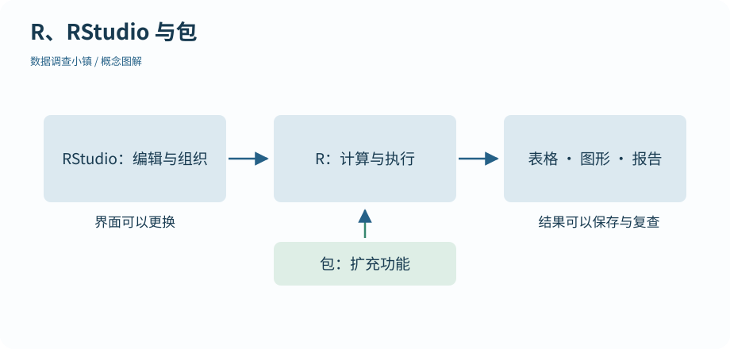
从编辑界面到执行环境，再到结果。RStudio 帮助组织工作，R 执行代码，包提供额外功能。
放大查看 ↗ 保存 SVG ↓可以把它们想成工作台上的工具：R 负责执行，RStudio 帮你组织操作，包补充能力。这个比喻只解释职责，不意味着 R 必须依赖 RStudio。你不需要先学 Linux、Python 或生物信息分析。
R 延续了贝尔实验室 S 语言的许多设计。Ross Ihaka 和 Robert Gentleman 在奥克兰大学于 1990 年代开展了 R 的早期工作，后来由 R Core 与开放社区共同发展。它一开始就关心统计计算和图形，因此“一整列数一起算”是很自然的操作。
历史能解释习惯，不能代替理解。我们会从少量数字开始，再走向数据框、图形和统计方法。碰到陌生术语，可以点开解释，读完再回来，不必先背一本词典。
前 24 节学习语言、表格、绘图与简单脚本；后 12 节理解抽样、区间、检验和回归。地图上的街区都能自由进入，编号给出推荐顺序。每节的“已读”只帮助记住位置，并不证明已经掌握。
教材里的公园、地点和实验都是明确标注的模拟资料。它们让每一步可复查，但不能用来宣称真实的城市气温或材料性能。练习数据、完整代码和参考输出都在下载包内。下一节先把工作台准备好。
动手试试
只有 RStudio，没有 R，能否直接执行 R 脚本？再说出一个包可能提供的功能。
先区分编辑界面与实际执行代码的程序。
不能。先安装 R，再让 RStudio 使用它。包可以提供图形、表格整理等功能，例如 ggplot2 绘图。
下一节继续沿地图向前。也可以先修改本节例子中的一个值，解释输出为什么变化。
检查一下理解
R 是语言及运行环境；RStudio 是编辑与组织操作的工具。
第 02 节 · 启程接待所
怎样确认工作台已经能用了？
安装 R 与 RStudio Desktop；辨认控制台；完成第一项环境检查。
先到 R 官方下载页选择自己的系统，安装 R。再到 Posit 的 RStudio Desktop 下载页安装开源桌面版。Windows 使用 Windows 安装程序；macOS 选择符合芯片架构与系统版本的安装包；Linux 使用与你的发行版对应的官方安装说明。
这份教材的发布验证会记录实际 R 与包版本，维护记录在“代码与资料”中。不要因为截图上的补丁版本与你不同就立即重装；先用下面的简单计算确认程序能启动。安装软件与包时需要网络，教材网页本身支持离线阅读。
启动 RStudio 后，找到 控制台，通常能看到 R 的启动信息和 > 提示符。只输入 1 + 1 并回车，不要输入教程或控制台已有的 >。正常结果是 [1] 2：[1] 表示这一行从结果的第一个元素开始，并不是又乘了一次一。
# 数据调查小镇 · 第 02 节
# 在 r-lab 项目根目录运行；输出只写入 results。
# 安装后，先确认 R 确实可以计算。
print(1 + 1)
print(mean(c(27, 29, 28)))[1] 2 [1] 28
第二个例子把三个温度交给 mean()，输出均值。现在只需确认你能输入并得到结果；下一节会拆开函数和参数。
脚本编辑区让你保存多行代码，控制台立即执行代码。对象列表显示当前会话里的对象，绘图区显示图形。窗口可以移动，因此判断区域要看标签与用途，不能只记“屏幕左下角”。
如果没有脚本编辑区，可以通过 File → New File → R Script 新建脚本。暂时不用安装整套扩展包，也不用配置其他语言。先把基础 R 跑起来，减少同时发生的问题。
如果 RStudio 提示找不到 R，确认 R 已安装，关闭后重开 RStudio；必要时在官方说明中选择正确的 R 安装位置。如果 1 + 1 没有结果，看看是否输入到了编辑区：那里需要选中代码后点击 Run，或使用 Ctrl+Enter；macOS 通常用 Command+Enter。
如果提示符变成 +，常见原因是引号或括号没有闭合。按 Esc 中断这一次输入，再完整重试。它不代表软件损坏。getRversion() 可以查看 R 版本；sessionInfo() 可以查看更完整的运行环境，遇到问题时保留这些信息很有帮助。
动手试试
把 1 + 1 写进脚本区但没有结果，应该重新安装 R 吗？请完成计算。
脚本区保存文字，Run 把选中的代码送到控制台。
不必重装。选中该行，点击 Run 或使用相应快捷键。若控制台得到 2，说明这条表达式已经执行。
下一节继续沿地图向前。也可以先修改本节例子中的一个值，解释输出为什么变化。
检查一下理解
> 是控制台提示符；[1] 2 是输出，两者都不是需要输入的代码。
第 03 节 · 启程接待所
刚算出的结果，怎样留给下一步？
理解对象、赋值、函数调用与命名参数；查询函数帮助。
输入 temperature <- 28，R 会把值与名字联系起来。对象可以是数字、文字、表格，也可以是后面产生的模型。赋值中的 <- 不是“小于再减去”，而是把右边的结果赋给左边的名字。
接着输入 temperature + 2 得到 30，但对象仍保存 28。想更新它，需要明确写 temperature <- temperature + 2。把名字想成标签很有帮助：单纯看一眼、算一算，不会自动换掉标签所指的值。
# 数据调查小镇 · 第 03 节
# 在 r-lab 项目根目录运行；输出只写入 results。
# 对象保存计算结果；函数名后面的括号装入参数。
temperature <- 28
print(temperature + 2)
temperatures <- c(27, 29, 28)
print(mean(temperatures))
print(round(28.456, digits = 1))[1] 30 [1] 28 [1] 28.5
函数接收输入并返回结果。mean(temperatures) 的函数名是 mean，括号里是传入的数据；round(28.456, digits = 1) 中，digits 是参数名，告诉函数保留几位小数。
括号、逗号和引号都有作用。逗号分隔参数；文字需要放在英文引号里；"temperature" 是一段文字，而 temperature 是对象名。拼写必须一致：Temperature 和 temperature 是两个名字。
输入 ?round 可以打开帮助。先看 Usage 和 Arguments，再看 Examples，不必第一遍读懂每一个选项。你可以把 digits = 1 改为 digits = 2，比较输出，确认这个参数到底改变了什么。
初学时，我们统一用 <- 保存对象，用 = 给函数里的参数命名。R 在部分位置也允许用 = 赋值，这里保持一种写法，是为了更容易辨认不同用途。
“object not found” 往往意味着名字拼错、大小写不一致，或创建对象的那一行还没执行。先检查发生错误的对象，不要把整份代码反复粘贴。对象名可以写得清楚，例如 temperature_c 表示摄氏温度，通常比 a、b 更容易复查。
本节使用的 c() 会把几项值组合起来。下一站会正式认识这种对象：向量。当前你只需理解：R 先计算括号中的输入，再把结果交给外面的函数。
动手试试
用 round() 把 28.456 保留两位小数，并解释它是否会改写原来的数字对象。
传入 digits = 2；若想保留结果，需要赋值。
round(28.456, digits = 2) 返回 28.46。单独调用不会更新别的对象；可用 rounded <- round(28.456, digits = 2) 保存结果。
下一节继续沿地图向前。也可以先修改本节例子中的一个值，解释输出为什么变化。
检查一下理解
计算返回一个结果，赋值才把结果保存到指定名字。
第 04 节 · 启程接待所
明天重开电脑，今天的步骤还在吗？
建立 RStudio 项目；理解相对路径；保存并执行脚本。
从“代码与资料”下载练习 ZIP，解压得到 r-lab。保留它的目录结构，双击 r-lab.Rproj 打开项目。项目内的 data 放输入，lessons 放逐课代码，scripts 放完整流程，results 放生成结果。
项目帮助 RStudio 把这些材料放在同一个工作范围内。打开项目后，工作目录通常就是项目根目录。可用 getwd() 检查当前位置，但别把自己的绝对路径复制进教材代码。
图解 · 文件都有自己的位置

从 r-lab 项目根目录出发，用相对路径连接原始数据、脚本和输出。移动整个项目后内部路径仍成立。
放大查看 ↗ 保存 SVG ↓data/observations.csv 表示当前目录里的 data 子目录中的文件。它不表示“电脑上任意一个叫 observations.csv 的文件”。用 file.exists() 检查路径，比一开始就尝试各种导入参数更容易定位问题。
# 数据调查小镇 · 第 04 节
# 在 r-lab 项目根目录运行；输出只写入 results。
# 从 r-lab.Rproj 打开项目，再运行脚本；路径从项目根目录出发。
print(file.exists("data/observations.csv"))
dir.create("results", showWarnings = FALSE)
writeLines("My first reproducible note", "results/first-note.txt")
print(readLines("results/first-note.txt"))[1] TRUE [1] "My first reproducible note"
这段代码确认输入存在，再把一行文字写入 results。dir.create(..., showWarnings = FALSE) 在这里允许结果目录已经存在。用路径分隔符 / 写相对路径，可以避免把某台机器的用户名写进代码。
把代码保存为 .R 文件。在 RStudio 中，可以逐行 Run，也可以点击 Source 运行整个文件；在项目控制台执行 source("lessons/04.R") 也能运行本节。完整逐课脚本包含所需输入步骤，并显式打印关键结果。
项目默认不恢复旧 .RData，退出时也不把整个工作区自动保存。这样，重启 R 后运行脚本，才能看出是否漏写了步骤。不是说 RData 文件不能用，而是隐藏在旧工作区里的对象容易让代码“只在自己电脑上成功”。
保存脚本，重启 R 会话，然后重新运行它。若成功生成相同文字，说明结果不依赖刚才在控制台偷偷创建的对象。每次练习都在副本上进行，原始记录保留在 data；写出结果前看一眼目标文件名，避免覆盖自己的其他工作。
动手试试
如果把整个 r-lab 移到另一个文件夹，再从其中的项目文件打开，data/observations.csv 需要改成新绝对路径吗？
相对路径取决于项目内部结构以及运行时的工作目录。
通常不需要。完整保留目录结构并从新位置打开项目，路径仍从项目根目录出发。若 file.exists() 为 FALSE，先用 getwd() 检查当前位置。
下一节继续沿地图向前。也可以先修改本节例子中的一个值，解释输出为什么变化。
检查一下理解
重启清除本次会话中的对象，完整重跑可以暴露漏写的创建和读取步骤。
第 05 节 · 对象仓库
四次测温，可以一起加一吗？
创建向量，查看类型和长度，理解逐元素计算。
公园记录了四次温度。用 c(27, 29, 28, 31) 把它们组成一个向量，就能把一项操作应用到每个元素。temperature + 1 返回四个新数，不需要先写四行加法。
图解 · 一列值，一起计算
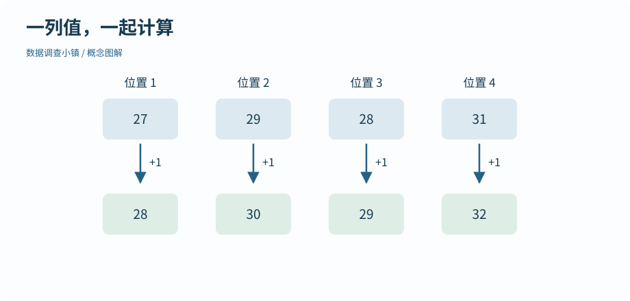
上排是四个原温度，下排是分别加一后的新值。位置一一对应，原对象只有在赋值时才改变。
放大查看 ↗ 保存 SVG ↓向量可以想成排好的一列记录。这个比喻要保留两个事实：元素有顺序；一个基础原子向量的元素类型一致。R 中看似单独的数字 28，通常也可以理解为长度为 1 的数值向量。
# 数据调查小镇 · 第 05 节
# 在 r-lab 项目根目录运行；输出只写入 results。
temperature <- c(27, 29, 28, 31)
print(temperature)
print(length(temperature))
print(temperature + 1)
print(seq(from = 2, to = 10, by = 2))
print(rep("morning", times = 3))
print(typeof(temperature))[1] 27 29 28 31 [1] 4 [1] 28 30 29 32 [1] 2 4 6 8 10 [1] "morning" "morning" "morning" [1] "double"
length() 回答有多少个元素，typeof() 回答底层是什么类型，直接打印对象让你看见它们的值。四个数字不是“四行四列”，也还没有自动带上“摄氏度”这个单位。把单位写进变量名和字段说明，才不会在后面的解释里弄混。
常见类型包括数值、字符和逻辑。"28" 是字符，28 是数字；TRUE 和 FALSE 是逻辑值，不加引号。混合类型会发生什么，我们在第 07 节通过实际例子观察。
seq(from = 2, to = 10, by = 2) 生成 2、4、6、8、10；rep("morning", times = 3) 重复一个标签。1:5 是整数序列的简写。这里的每一个参数都在说明规律，而不是给电脑暗示你的意图。
seq(from = 1, to = 15, by = 2) 产生的是奇数，不是偶数。先预测开头的三项再运行，是检查这类代码的简单办法。生成序列后还应看最后一项有没有超过范围。
把新温度赋给 adjusted <- temperature + 1，原对象就能用于对照。这个例子只演示运算，并不意味着应该随意改测量值。真正的数据校正需要理由、方法和记录。在教材里，先学会解释代码做了什么，再判断是否应该这样做。
动手试试
生成 2 到 14 的全部偶数，并核对元素数量。
用 seq() 的起点、终点和步长；再用 length()。
编号 <- seq(from = 2, to = 14, by = 2) 会得到 7 个数。也可以把对象命名为 ids；检查 length(ids) 为 7。
下一节继续沿地图向前。也可以先修改本节例子中的一个值，解释输出为什么变化。
检查一下理解
length() 统计元素个数，不是最大值，也不是对象名字的数量。
第 06 节 · 对象仓库
怎样只留下比较热的几次测量？
区分位置索引和逻辑筛选，组合逐元素条件。
temperature[c(1, 4)] 取出第一项和第四项。R 的常规正整数索引从 1 开始；负数索引用于排除位置，比如 temperature[-1] 去掉第一项。不要把正位置与负位置混在同一个索引中。
如果想找温度至少为 29 的记录，先计算 temperature >= 29。结果是一排 TRUE/FALSE，长度与原向量一致；放进方括号，TRUE 对应的元素就留下。
图解 · 一张对齐的逻辑筛网

先判断每一项是否至少为 29，再保留 TRUE 对应的原值。筛选保留原始顺序，不自动排序。
放大查看 ↗ 保存 SVG ↓# 数据调查小镇 · 第 06 节
# 在 r-lab 项目根目录运行；输出只写入 results。
temperature <- c(27, 29, 28, 31)
print(temperature[c(1, 4)])
keep <- temperature >= 29
print(keep)
print(temperature[keep])
print(temperature[temperature >= 28 & temperature < 31])
print(c("P01", "P04") %in% c("P01", "P02", "P03"))[1] 27 31 [1] FALSE TRUE FALSE TRUE [1] 29 31 [1] 29 28 [1] TRUE FALSE
逻辑向量像一张与记录逐项对齐的筛网。先单独打印 keep，再运行 temperature[keep]，能够看出到底哪些位置被选中了。不要只背最终的一行，否则一旦筛错就不知道从哪里检查。
== 判断相等，!= 判断不相等，>= 包含边界，> 不包含。赋值符号 <- 则改变对象绑定。例如“筛选小于负二”要写 x[x < -2]；把空格拿掉写成 x[x<-2]，可能被解析为赋值，含义完全改变。
temperature >= 28 & temperature < 31 让两个条件逐项同时成立；| 表示逐项满足任意一边；! 取反。用于筛选一整列时使用 & 和 |。后面的条件判断中还会遇到只关心单个逻辑结果的情况，不能把两类符号随意替换。
%in% 检查每个元素是否属于给定集合。它不要求双方长度相同，也不是像 == 一样逐位置比对，因此适合筛选若干地点编号。
读取 temperature[keep] 得到子集，本身不更改原对象。只有写出赋值，才保存或替换内容。下一节加入缺失值后，条件可能不再只有 TRUE 和 FALSE；这正是我们先把筛选过程拆开的原因。
动手试试
对 c(27, 29, 28, 31) 选出大于等于 28 且小于 31 的值，预测保留顺序。
条件作用于原位置，筛选不会自动排序。
x <- c(27, 29, 28, 31); x[x >= 28 & x < 31] 返回 29、28。28 被保留，31 被排除，顺序沿用原向量。
下一节继续沿地图向前。也可以先修改本节例子中的一个值，解释输出为什么变化。
检查一下理解
& 逐元素组合逻辑条件；<- 赋值；+ 做加法。
第 07 节 · 对象仓库
空白温度可以直接当成零吗？
识别 NA，解释缺失传播、类型转换和向量回收。
假设三次测温是 27、缺失、29。NA表示缺失信息。它与零不同：零是一个具体测量值；NA 表示我们不知道。R 会把 mean(c(27, NA, 29)) 的结果保留为 NA，提醒你有信息没有处理。
图解 · 未知，不能替换成零

默认均值保留缺失提示；明确忽略缺失时得到 28，但只用了两项记录。数据没有被补齐。
放大查看 ↗ 保存 SVG ↓# 数据调查小镇 · 第 07 节
# 在 r-lab 项目根目录运行；输出只写入 results。
temperature <- c(27, NA, 29)
print(is.na(temperature))
print(mean(temperature))
print(mean(temperature, na.rm = TRUE))
print(sum(!is.na(temperature)))
print(c(1, "2"))
print(as.numeric(c("27", "29")))
print(c(1, 2, 3, 4) + c(10, 20))
# 长度整除时也会回收；没有警告不等于符合你的意图。[1] FALSE TRUE FALSE [1] NA [1] 28 [1] 2 [1] "1" "2" [1] 27 29 [1] 11 22 13 24
加入 na.rm = TRUE 后，均值是用两条已知记录计算的。这个参数没有修复那一格，也没有证明缺失不影响分析。报告应同时给出有效数，例如 sum(!is.na(temperature))，再思考为何缺失：设备坏了还是某个时段漏记了？
与未知值比较通常仍是未知，所以 x == NA 不能产生你想要的“哪些位置缺失”筛网。用 is.na(x)；用 !is.na(x) 找已知位置。x[!is.na(x) & x > 28] 把“有记录”和“温度条件”都写清楚。
把数值与文字用 c() 合并，可能统一转为字符。as.numeric(c("27", "29")) 可以转成数字，但 as.numeric("hot") 不能猜出温度，会产生 NA 并给出警告。警告是线索，应检查原始文本和新产生的缺失，不能只把警告隐藏。
类型转换不是改标签：它可能改变后续运算是否有效。类别编码也有自己的规则，第 09 节会说明为什么不能随手对因子使用 as.numeric()。
R 的许多向量运算会重复使用较短的向量，这叫回收规则。本例的第二排 10、20 被重复为 10、20、10、20，因此计算没有警告。如果长度不能整除，通常会出现警告。即使没有警告，也应检查这种对应关系是否符合你的意图。
本节的原则是先辨认信息，再决定处理方式。缺失不能默默填零，文字不能未经检查当数字，长度不同不能只凭“代码没报错”就接受结果。
动手试试
x <- c(30, NA, 33, NA)，计算已知温度的均值与有效数。
mean() 的 na.rm 参数与 sum(!is.na()) 各回答一个问题。
mean(x, na.rm = TRUE) 为 31.5；sum(!is.na(x)) 为 2。原向量仍有 4 个位置，缺失值没有被补成其他温度。
下一节继续沿地图向前。也可以先修改本节例子中的一个值，解释输出为什么变化。
检查一下理解
计算规则与数据修补是不同操作；忽略后要记录有效样本数。
第 08 节 · 对象仓库
温度和地点怎样保持一一对应？
理解数据框的一行一列，安全提取、筛选和新增列。
数据框把等长的列组织在一起。地点列可以是文字，温度列可以是数字；同一行表示它们属于同一条记录。单独对温度列排序后再放回原表，会破坏对应关系，因此后面学排序时要一起移动整行。
图解 · 行保持关系，列记录变量

每行是一条记录，每列是一个变量。框出的第二行把地点与温度绑定在同一条观察中。
放大查看 ↗ 保存 SVG ↓# 数据调查小镇 · 第 08 节
# 在 r-lab 项目根目录运行；输出只写入 results。
records <- data.frame(site = c("P01", "P02", "P03"), temperature = c(27, 30, 26))
print(records)
print(dim(records))
print(records$temperature)
print(records[2, , drop = FALSE])
print(records[records$temperature >= 27, c("site", "temperature"), drop = FALSE])
records$temperature_f <- records$temperature * 9 / 5 + 32
print(records)site temperature 1 P01 27 2 P02 30 3 P03 26 [1] 3 2 [1] 27 30 26 site temperature 2 P02 30 site temperature 1 P01 27 2 P02 30 site temperature temperature_f 1 P01 27 80.6 2 P02 30 86.0 3 P03 26 78.8
records[行, 列] 用逗号分开行和列。records[2, ] 选择第二行的所有列；records[, "temperature"] 选择温度列；records$temperature 也是取这一列的常用写法。先说清“我要几行几列”，再写索引，会比盲试括号更可靠。
有些提取会自动简化结果。例如取一列时可能得到向量，而不是仍带行列结构的数据框。drop = FALSE 可以在方括号提取时保留表格结构。不是每一次都必须写它，但当后续步骤要求数据框时，它很有用。
records$temperature >= 27 产生与行对应的逻辑向量，放进逗号前面就是筛选行。逗号后面的 c("site", "temperature") 列出保留的列名。结果可能比原表小，但你仍应知道每一行来自哪里。
dim() 返回行数与列数，nrow() 和 ncol() 分别查看一个方向，names() 查看列名。这些小检查能帮助你确认操作是否作用在预期维度。
records$temperature_f <- records$temperature * 9 / 5 + 32 把摄氏温度换算为华氏温度，并保留两列。新增列的长度应与行数相符；不要依赖不清楚的循环回收来“凑够”行数。
这一节先使用很小的表，方便逐格核对。数据来自文件时，同样的行列规则仍然成立。行名也能给记录起名字，但本教材把稳定的记录编号保存在明确的列里，便于导出与连接。
动手试试
只提取 records 的 site 一列，同时让结果仍然是数据框。
列名在逗号后面，配合 drop = FALSE。
records[, "site", drop = FALSE] 保留一列数据框。records$site 返回该列向量，适合逐项处理，但结构不同。
下一节继续沿地图向前。也可以先修改本节例子中的一个值，解释输出为什么变化。
检查一下理解
逗号前是行，逗号后是列；留空表示这一方向全部保留。
第 09 节 · 对象仓库
为什么 afternoon 会排在 morning 前面？
理解因子与水平；避免把类别内部编码当数值。
公园记录分 morning 和 afternoon。按字符排序，afternoon 通常在 morning 前面；但我们讲一天的经过，希望从早到晚。因子把类别及其允许的水平放在同一个对象里，可以明确规定展示顺序。
图解 · 类别标签与内部编码

10、20 是示例标签，1、2 是因子内部编码。先转回文字再转数字，才能恢复这些数值标签。
放大查看 ↗ 保存 SVG ↓# 数据调查小镇 · 第 09 节
# 在 r-lab 项目根目录运行；输出只写入 results。
period <- factor(c("afternoon", "morning", "morning"), levels = c("morning", "afternoon"))
print(period)
print(table(period))
print(levels(period))
labels <- factor(c("10", "20", "10"))
print(as.integer(labels))
print(as.numeric(as.character(labels)))[1] afternoon morning morning
Levels: morning afternoon
period
morning afternoon
2 1
[1] "morning" "afternoon"
[1] 1 2 1
[1] 10 20 10levels = c("morning", "afternoon") 说明有哪些类别以及顺序。table(period) 统计各类别的次数。用英文值只是为了脚本跨环境更容易复现；字段手册中注明 morning 是上午、afternoon 是下午。
把上午放在下午前面，不意味着两个类别之间“相差一个单位”。类似地，低、中、高可以有等级，但等级之间的距离未必相等。ordered = TRUE 会建立有序因子，它可能影响后面的模型处理，因此不要只为换图例顺序就随意添加。
本节只需要普通因子的水平顺序。第 21 节会用它让图例按早晚排列；不用等到统计建模才认识类别。
例子中的 factor(c("10", "20", "10")) 保存的是两个类别。直接用 as.integer() 看到的是内部编码 1、2、1，不能把它解释为 10、20、10。如果这些标签确实代表测量数值，需要先转回字符，再转换为数字，并检查结果。
因子内部编码用于区分类别，不是这个类别的测量值。这一点在旧代码、导入设置或模型结果中很常见，值得真正跑一次看输出。
如果你只允许上午和下午，却输入 evening，转换时可能变成 NA。它提醒你数据出现了不在已知类别中的值。先决定是拼写问题还是确实新增了时段，再更新规则；不要把它默默当成下午。
类别来自记录设计，R 不会替你定义它们。完整的数据字典需要说明允许值、含义和缺失标记。
动手试试
记录现在增加 evening。怎样显式保留上午、下午、傍晚的顺序？
把新类别加入 levels，并先检查原始字符串。
factor(values, levels = c("morning", "afternoon", "evening"))。先确认 values 中没有多余空格或拼写变体，否则仍可能产生 NA。
下一节继续沿地图向前。也可以先修改本节例子中的一个值，解释输出为什么变化。
检查一下理解
因子存储类别编码及标签；转整数暴露的是编码。
第 10 节 · 对象仓库
一个分析结果为什么能同时有数字、表格和文字？
区分矩阵、数据框和列表；理解 [ ] 与 [[ ]]。
矩阵通常是同一种基础类型的元素，加上行列维度。matrix(1:6, nrow = 3) 默认按列填充：第一列是 1、2、3，第二列是 4、5、6。不要按照屏幕上的横向阅读习惯猜填入顺序；必要时明确指定 byrow = TRUE。
图解 · 矩阵、表格与列表

矩阵强调同类值的二维结构，数据框允许各列不同类型，列表允许每个元素装不同结构。
放大查看 ↗ 保存 SVG ↓# 数据调查小镇 · 第 10 节
# 在 r-lab 项目根目录运行；输出只写入 results。
measurements <- matrix(1:6, nrow = 3, dimnames = list(c("P01", "P02", "P03"), c("morning", "afternoon")))
print(measurements)
print(measurements[2, 1])
print(dim(measurements[, 1, drop = FALSE]))
box <- list(title = "Park notes", readings = measurements, checked = TRUE)
print(names(box))
print(class(box["readings"]))
print(class(box[["readings"]]))
print(box$readings) morning afternoon
P01 1 4
P02 2 5
P03 3 6
[1] 2
[1] 3 1
[1] "title" "readings" "checked"
[1] "list"
[1] "matrix" "array"
morning afternoon
P01 1 4
P02 2 5
P03 3 6和数据框相似，矩阵也用 [行, 列] 提取。保留单列矩阵时可以使用 drop = FALSE。矩阵适合整齐的同类数值，而数据框允许不同列各有类型；把含文字的表直接转成矩阵，可能使数字也变成文字。
列表允许每个元素有不同类型和长度。本例把标题、矩阵和一个检查标志放进 box。它不是把三者挤成同一类数值，而是分别保留它们。
一个模型结果常常就是这样组织的：系数是一组数，残差是另一组数，模型调用可能是表达式。现在理解列表，后面看到 comparison$conf.int 就不会觉得输出里突然出现了神秘结构。
box["readings"] 取出一个仍然包在列表里的子列表；box[["readings"]] 取出该元素本身，也就是矩阵。box$readings 在这种按名字取元素的场景也很常用。
区别可以这样检查：先看 class()，再看值。不要把“打印看起来差不多”当成结构相同。外层结构不同，下一步可用的索引和函数也可能不同。
初学阶段不要求你掌握所有复杂嵌套结构。先会问：它是一列值、一张表，还是装着几个结果的列表？str() 可以简要查看结构，names() 查看带名字的部分。遇见新函数的返回值时，先检查结构再取内容，往往比猜位置更稳妥。
动手试试
已知 box 的 readings 元素是矩阵，用哪一种提取方式能直接得到它？解释单方括号的结果。
比较 class(box["readings"]) 与 class(box[["readings"]])。
box[["readings"]] 或 box$readings 直接取得矩阵；box["readings"] 仍是含一个元素的列表。
下一节继续沿地图向前。也可以先修改本节例子中的一个值，解释输出为什么变化。
检查一下理解
默认 byrow = FALSE，因此先填第一列，再填第二列。
第 11 节 · 整理工坊
文件已经打开，R 真的读懂它了吗？
读取 CSV，核对行列与缺失；导出表格和单个 R 对象。
CSV用分隔符组织表格，第一行常常是列名。它保存文字表示的数据，不会完整保存 R 的所有类型。读取时，R 需要判断哪里是字段、哪一行是表头、哪些文字表示缺失，再把内容转换为对象。
本课从项目根目录读取 data/observations.csv。随包数据统一使用 UTF-8 编码，空白温度表示缺失。先确认 file.exists() 为 TRUE，再读入，能把“找不到文件”和“文件格式不对”分开处理。
图解 · 文本文件与 R 对象
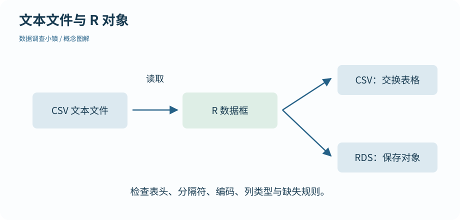
CSV 按格式约定读成表；写出 CSV 便于交换，RDS 保存单个 R 对象的结构。
放大查看 ↗ 保存 SVG ↓# 数据调查小镇 · 第 11 节
# 在 r-lab 项目根目录运行；输出只写入 results。
records <- read.csv("data/observations.csv", stringsAsFactors = FALSE, fileEncoding = "UTF-8")
print(dim(records))
print(head(records[, c("record_id", "site_id", "temperature_c")], 3))
dir.create("results", showWarnings = FALSE)
write.csv(records, "results/observations-copy.csv", row.names = FALSE, na = "", fileEncoding = "UTF-8")
roundtrip <- read.csv("results/observations-copy.csv", stringsAsFactors = FALSE, fileEncoding = "UTF-8")
print(identical(names(records), names(roundtrip)))
saveRDS(records, "results/observations.rds")
print(identical(records, readRDS("results/observations.rds")))[1] 43 7 record_id site_id temperature_c 1 O001 P01 28.0 2 O002 P02 29.6 3 O003 P03 27.0 [1] TRUE [1] TRUE
dim() 检查行列数，head() 查看开头，str() 检查列类型。当前原始表有 43 行，其中包含一条完全重复的导入；这一事实写在数据字典里。后面会处理它，现在先忠实读入，不要为了让行数符合猜测随意删行。
如果所有内容挤在一列，检查分隔符；如果第一条记录变成列名，检查表头设置；如果中文乱码，确认文件实际编码。read.csv() 面向逗号分隔，制表符表格可以用 read.delim()。不能因为扩展名都是 txt 就假定内部结构相同。
write.csv(..., row.names = FALSE) 避免额外写出一列 R 行名。na = "" 与本练习的缺失约定一致，但真实工作中应先确认空白是否可能具有其他含义。写完再读一次、对比列名和关键值，可以发现导出带来的变化。
不要把第一列自动设成行名。记录编号作为普通列，后面连接和导出都更清楚。像编号中的前导零这种信息，必要时应通过导入类型设置明确保留为字符。
RDS适合保存单个 R 对象。saveRDS() 写出，readRDS() 读回后由你指定对象名；它能够保留更多 R 类型信息，适合分析中间结果。CSV 更容易被其他软件读取，RDS 更贴近 R 对象，两者用途不同。
练习只读取随包文件或可信来源的数据。你不需要为这门课去寻找旧稿里没有附带的 RData 文件；每一项输入都有明确位置。
动手试试
导出的 CSV 再读入后多了一列 X，内容是 1、2、3……，先检查哪个写出参数？
它可能是把 R 的行名一起写出了。
先检查 write.csv() 是否省略 row.names = FALSE。核对原始表后重新导出，不能仅凭列名就删除可能有意义的数据。
下一节继续沿地图向前。也可以先修改本节例子中的一个值，解释输出为什么变化。
检查一下理解
RDS 保存 R 对象；PNG 是图像，不能恢复原对象结构。
第 12 节 · 整理工坊
平均温度能讲完整个故事吗？
理解均值、中位数、四分位数和标准差；画第一幅基础图。
看 26、27、28、39。前三次彼此很近，最后一次明显更高。均值把总和平均分配，中位数寻找排序后的中间位置；四个数时，中位数是中间两个数的平均。本例均值为 30，中位数为 27.5。
图解 · 同一组数的两个中心
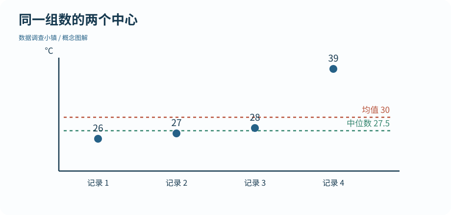
图中四个点为 26、27、28、39。均值是 30，中位数是 27.5；改变高值会以不同方式影响两个中心。
放大查看 ↗ 保存 SVG ↓# 数据调查小镇 · 第 12 节
# 在 r-lab 项目根目录运行；输出只写入 results。
# 先用四个数看清概念；最后一个值会把均值拉高。
x <- c(26, 27, 28, 39)
print(c(n = length(x), mean = mean(x), median = median(x), sd = round(sd(x), 2)))
print(quantile(x))
dir.create("results", showWarnings = FALSE)
png("results/12-first-plot.png", width = 1000, height = 620, res = 120)
plot(seq_along(x), x, pch = 19, col = "#256187", xlab = "Record", ylab = "Temperature (C)", main = "Read the values before averaging")
abline(h = mean(x), col = "#b9553d", lty = 2)
abline(h = median(x), col = "#36866f", lty = 3)
legend("topleft", c("Mean", "Median"), col = c("#b9553d", "#36866f"), lty = c(2, 3), bty = "n")
invisible(dev.off())n mean median sd 4.00 30.00 27.50 6.06 0% 25% 50% 75% 100% 26.00 26.75 27.50 30.75 39.00
脚本在 results/12-first-plot.png 保存一幅基础 R 图。每个点是一条记录，两条水平线标出均值和中位数。把最后的 39 改成 29，重新运行，观察哪条线移动得更多。
R 实际生成 · 四条记录与两种中心
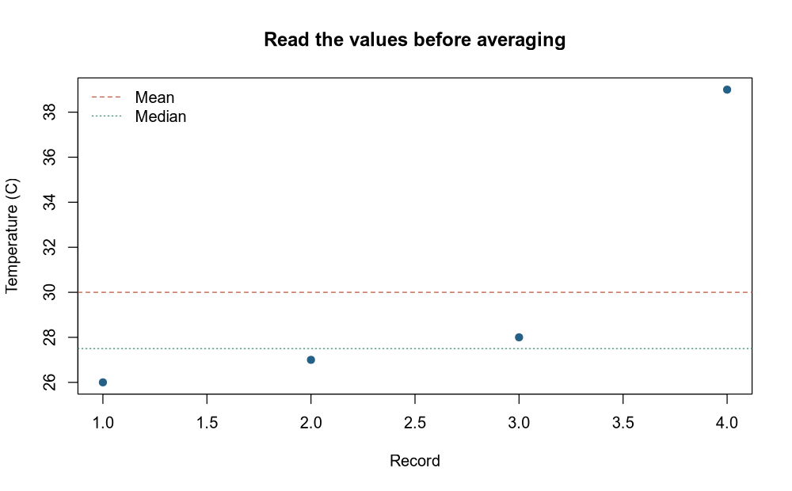
横轴是记录编号，纵轴是温度。红色虚线为均值，绿色虚线为中位数；高温记录对两者影响不同。
放大查看 ↗ · 下载图片 ↓均值和中位数描述中心。标准差描述观测值的分散程度，并保留原测量单位；方差则使用单位的平方。R 的 sd() 计算样本标准差，计算中使用 n−1，而不是把它简单理解成离均值距离的平均。
quantile() 返回分位数。25% 和 75% 分位数之间包含分布中间的一部分信息，它们的差称为四分位距。小样本分位数有不同计算约定，因此比较软件结果时要注意定义，而不是见到小差异就认定一边算错。
问“把总量均摊，每条多少”，均值直接相关；问“一条居中的典型记录”，中位数可能更直观。要知道极端值、集中程度和是否分成几团，还需要看数据与图形。不要只按哪个数字好看就选择摘要。
这个四值例子是人为构造的教学示意。真实记录里，39 可能是合理高温，也可能是录入错误。先检查来源，不能只因为它远离其他值就删除。
本节的描述统计总结手里的记录。它没有自动证明所有公园的温度，也没有给出另一个样本会怎样。我们会先学会整理和画图，再进入抽样与推断；现在把“这份数据是什么样”讲清楚就足够。
动手试试
把 c(26, 27, 28, 39) 的最后一项改为 29，比较新均值和中位数。
直接计算两个统计量，别只看四个数变得更近。
新均值与中位数均为 27.5。原均值 30 明显下降，中位数仍为 27.5；这说明两种中心对这次修改的反应不同。
下一节继续沿地图向前。也可以先修改本节例子中的一个值，解释输出为什么变化。
检查一下理解
标准差描述数据的分散；均值的标准误在抽样部分另行讨论。
第 13 节 · 整理工坊
装过一个包，为什么重启后还要加载？
区分安装与加载，使用命名空间和原生管道。
基础 R 已能完成很多工作。为了把整理与绘图写得更清楚，现在补充四个包：dplyr、tidyr、stringr 和 ggplot2。在项目中显式运行一次 source("setup.R") 安装它们；这一步需要联网。之后重新打开 R，使用某个包时仍要加载，或用 包名::函数名 调用。
安装是把文件放到包库，加载是让当前会话使用其中的功能。分析脚本不会遇到缺包就悄悄安装，以免一次普通计算突然改变环境。若缺包，先完成环境准备，再重跑。
# 数据调查小镇 · 第 13 节
# 在 r-lab 项目根目录运行；输出只写入 results。
# 安装只做一次；加载发生在每次新会话。setup.R 是单独的安装入口。
suppressPackageStartupMessages(library(dplyr))
x <- c(26, 28, 30)
print(round(mean(x), digits = 1))
print(x |> mean() |> round(digits = 1))
print(dplyr::filter(data.frame(temperature = x), temperature >= 28))[1] 28 [1] 28 temperature 1 28 2 30
命名空间帮助区分同名函数。dplyr::filter() 明确调用 dplyr 的筛选函数；只写 filter() 时，实际使用哪个同名函数取决于当前环境。遇到奇怪结果，可以先检查函数来源。
本课用 suppressPackageStartupMessages(library(dplyr)) 让参考输出集中于数据；它只抑制加载时的提示，不会把运行错误和普通警告一并隐藏。日常首次加载时，读一遍提示通常有帮助。
原生管道 |> 将左侧结果传给右侧函数，通常作为第一个参数。因此 x |> mean() |> round(digits = 1) 可以按从左到右的顺序读成“取 x，求均值，再保留一位小数”。
图解 · 让整理步骤接力

每一站接收上一步结果，再交给下一站。示意中的管道顺序是选行、选列、排序；每步都可以停下来核对。
放大查看 ↗ 保存 SVG ↓管道不会自动保存结果；仍然需要在最前面赋值。它也不会让所有函数都具备同样的参数位置，遇到复杂调用时可以先拆成中间对象，确认输入与输出。
你可能在其他资料里看到 %>%。那是来自相关包生态的管道，简单例子的读法相近，但占位符等细节不同。本教材统一使用 R 自带的 |>，先把一种方式学清楚，再查附录中的旧代码对照。
包安装失败时，先保留完整错误信息并查看系统与 R 版本。不要直接把另一个环境里的包库路径硬接进来；编译依赖可能不匹配。常见安装排查和版本复现方法放在附录中。
动手试试
install.packages("dplyr")、library(dplyr)、dplyr::filter() 各完成什么？
分别想成准备文件、加载工具、明确调用函数。
install.packages() 安装；library() 为当前会话加载；dplyr::filter() 明确使用 dplyr 的函数，前提是包已安装。
下一节继续沿地图向前。也可以先修改本节例子中的一个值，解释输出为什么变化。
检查一下理解
管道连接计算，不替代赋值或文件写出。
第 14 节 · 整理工坊
哪些下午记录比较热？
用 filter、select、mutate 和 arrange 组织逐步整理。
先把问题说具体：我们要看下午的有效温度，保留编号和地点，算出另一种温度单位，再按温度从高到低排列。这是四种不同动作，刚好可以对应四个清楚的函数。
filter() 选行，select() 选列，mutate() 新建或修改列，arrange() 排整行的顺序。每完成一步，就可以先停下来查看中间表格，再接下一步。
# 数据调查小镇 · 第 14 节
# 在 r-lab 项目根目录运行；输出只写入 results。
suppressPackageStartupMessages(library(dplyr))
records <- read.csv("data/observations.csv", stringsAsFactors = FALSE)
selected <- records |>
filter(period == "afternoon", !is.na(temperature_c)) |>
select(record_id, site_id, temperature_c) |>
mutate(temperature_f = temperature_c * 9 / 5 + 32) |>
arrange(desc(temperature_c))
print(head(selected, 5))
print(nrow(selected))record_id site_id temperature_c temperature_f 1 O011 P02 33.0 91.40 2 O017 P02 32.5 90.50 3 O034 P01 32.5 90.50 4 O035 P02 32.5 90.50 5 O023 P02 32.3 90.14 [1] 19
在这些常用 dplyr 调用中，可以直接用列名写条件，例如 filter(period == "afternoon")。函数会在传入的数据框中寻找对应列。这个写法不同于前面独立的向量筛选；理解它的使用范围，不要以为任何普通函数都自动知道 temperature_c 指哪张表。
本例同时写出 !is.na(temperature_c)，明确只保留有记录的温度。dplyr 的 filter() 保留条件为 TRUE 的行，条件为 NA 的行也不会留下，因此缺失规则应在解释中说清楚。
arrange(desc(temperature_c)) 把高温排在前面，同时带着这一行的编号和地点一起走。若只把温度向量排序后塞回原表，编号与温度就可能错配。表格整理不仅是得到某些数，更是维护它们之间的关系。
mutate() 中的换算使用整列向量；上一街区学过的算术规则仍然成立。返回一个新表不会自动改变原始 CSV。示例用 selected 接住结果，仍保留 records 用于检查。
查看结果是否全部为下午、是否仍有缺失、温度是否递减。遇到相同温度，单靠这一列不能定义唯一顺序；需要时可以再加入记录编号作为第二个排序条件。
目前这段筛选仍基于原始导入表。下一节会正式处理完全重复的导入，再进行分组汇总，避免把重复内容算成新的观测。
动手试试
改成筛选上午的有效记录，按温度从低到高排列。
改 period 的值，并使用 arrange(temperature_c)。
使用 filter(period == "morning", !is.na(temperature_c))，再 arrange(temperature_c)。保留编号和地点，核对每行对应关系。
下一节继续沿地图向前。也可以先修改本节例子中的一个值，解释输出为什么变化。
检查一下理解
select 选列，filter 选行；名称相似时先说出操作方向。
第 15 节 · 整理工坊
三处公园的均值，分别用了多少条记录？
识别完全重复，分组汇总并同时报告记录数和有效数。
随包原始记录有 43 行，其中一行是完全相同的重复导入。distinct(records) 删除整行完全相同的重复，留下 42 行。这个做法符合数据字典描述；它不是“看到编号一样就保留第一行”的通用规则。
如果相同编号对应不同温度，要回查原始记录。distinct(record_id, .keep_all = TRUE) 虽然能让编号唯一，却可能无声丢掉冲突。综合脚本会把这种情况作为需要人工检查的错误。
# 数据调查小镇 · 第 15 节
# 在 r-lab 项目根目录运行；输出只写入 results。
suppressPackageStartupMessages(library(dplyr))
records <- read.csv("data/observations.csv", stringsAsFactors = FALSE)
# 本数据的重复是完全相同的重复导入；distinct() 删除整行重复。
clean <- distinct(records)
summary <- clean |>
group_by(site_id) |>
summarise(n_records = n(), n_valid = sum(!is.na(temperature_c)),
mean_c = round(mean(temperature_c, na.rm = TRUE), 2), .groups = "drop")
print(c(raw_rows = nrow(records), unique_rows = nrow(clean)))
print(as.data.frame(summary)) raw_rows unique_rows
43 42
site_id n_records n_valid mean_c
1 P01 14 13 29.99
2 P02 14 13 30.57
3 P03 14 14 28.74分组让后面的计算分别作用于每一组。group_by(site_id) 按地点分成三叠，summarise() 把每叠压缩成一行摘要。结果行数从记录数变成地点数，这正是操作的目的。
n() 统计组内记录条数，sum(!is.na(temperature_c)) 统计能参与温度均值的条数。两者回答不同问题。.groups = "drop" 让结果回到普通未分组表，避免后续步骤仍带着未察觉的分组状态。
忽略缺失后能算出均值，但读者仍需要知道用了多少条记录。如果某个地点几乎全缺，而另一个地点记录完整，两个均值不能只因小数位相同就被当作同样充分的信息。
这里取到的表有 tibble 的打印习惯；示例转成普通数据框打印，使参考输出更稳定。tibble是常见的数据框形式之一，不会把记录神奇地变成另一种研究设计。
每个地点在不同日期、时段重复测量。我们可以按地点描述观测均值，却不能把所有行都当成彼此独立的地点样本来检验“公园之间是否有总体差异”。重复记录和独立单位的区别会在第 25 节展开。
若一整组温度都缺失，普通均值可能得到 NaN。第 23 节会写一个小函数，明确返回 NA，并保留有效数为零的信息。不要用零温度伪装成一个完整摘要。
动手试试
如果某组有 14 条记录、其中温度缺失 2 条，n_records 与 n_valid 分别应是多少？
“这一组多少行”和“多少行有温度”不是一个问题。
n_records 为 14，n_valid 为 12。均值若使用 na.rm = TRUE，则基于 12 个已知温度。
下一节继续沿地图向前。也可以先修改本节例子中的一个值，解释输出为什么变化。
检查一下理解
编号冲突不同于完全相同的重复导入，不能未经核查删掉其中一条。
第 16 节 · 整理工坊
连接两张表，为什么行数突然变多了？
理解连接键、左连接与未匹配记录，检查键的唯一性。
温度记录知道地点编号，地点资料知道地点名称和冠层覆盖率。连接键 site_id 把两者联系起来。它的意义来自记录设计，不是只要两个字段名字相同就能连接。
图解 · 连接看键，也看行数

两条 P01 记录连接唯一一条地点资料，仍得到两行。右侧键重复时可能复制左侧记录，必须检查关系。
放大查看 ↗ 保存 SVG ↓# 数据调查小镇 · 第 16 节
# 在 r-lab 项目根目录运行；输出只写入 results。
suppressPackageStartupMessages(library(dplyr))
records <- read.csv("data/observations.csv", stringsAsFactors = FALSE) |> distinct()
sites <- read.csv("data/sites.csv", stringsAsFactors = FALSE)
stopifnot(!anyDuplicated(sites$site_id))
joined <- left_join(records, sites, by = "site_id", relationship = "many-to-one")
print(c(before = nrow(records), after = nrow(joined)))
print(head(select(joined, record_id, site_id, site_name), 3))
print(nrow(anti_join(records, sites, by = "site_id")))
# 少一个地点时，左连接保留记录，但补入的资料缺失。
incomplete <- left_join(records, sites[1:2, ], by = "site_id", relationship = "many-to-one")
print(sum(is.na(incomplete$site_name)))before after
42 42
record_id site_id site_name
1 O001 P01 Riverside
2 O002 P02 Meadow
3 O003 P03 Grove
[1] 0
[1] 14left_join(records, sites, by = "site_id") 保留左边所有记录，为匹配成功的行补上地点资料。右表缺少某个编号时，这些左表记录仍存在，但补入字段变成 NA。
本例还使用 anti_join() 数出找不到地点资料的记录。一个稳妥的连接检查包含两件事：前后行数是否符合预期，未匹配编号有哪些。只看结果第一行出现了名称，并不能证明整张表都正确。
如果右表 P01 出现两次，那么左表每一条 P01 记录都可能匹配两行，结果就会膨胀。relationship = "many-to-one" 表明我们的预期：多条观察记录可以对应一条地点资料，每条观察不能匹配多条地点资料。
stopifnot(!anyDuplicated(sites$site_id)) 在连接之前检查地点键是否唯一。这些检查不会决定哪条地点资料正确；它们让矛盾早点显现，避免下游均值看起来很合理却重复计数。
inner_join() 只保留双方都匹配的记录。它适合明确需要交集的问题，但右表缺资料时，也可能把左表的观察悄悄排除。选择连接方式前先回答：没有地点说明的记录，应该保留待查，还是确实不在问题范围内？
表格连接的思想与关系数据库有关：用稳定的键组织多张各负其责的表。学习这一步，就是从“把两张表凑在一起”转向明确说明它们的关系。
动手试试
左表有两条 P01 记录，右表只有一条 P01 地点资料。左连接后会有几行？若右表出现两条 P01 呢？
每条左表记录会分别匹配符合条件的右表行。
唯一地点资料时得到两行；若右表有两条匹配，可能得到四行。many-to-one 检查会阻止后一种不符合本设计的连接。
下一节继续沿地图向前。也可以先修改本节例子中的一个值，解释输出为什么变化。
检查一下理解
左连接保留左侧记录；缺少匹配需要检查，不能把 NA 当作新信息。
第 17 节 · 整理工坊
上午和下午，应该放在列名里还是一列里？
进行宽长转换，识别转换键与原始信息是否保留。
地点资料卡可能把上午温度和下午温度排成两列。比较一个地点时很直观；但要按时段分组、画早晚颜色不同的图，把时段放进一列通常更顺手。
整洁数据强调变量、观察和表格结构之间的对应。这里的变量是地点、时段、温度，因此转成 site_id、period、temperature_c 三列，可以把后续操作写得一致。
图解 · 改变摆放，不增加信息

左边三地点各有两个时段，右边变成六条地点与时段组合。六个温度值保持对应。
放大查看 ↗ 保存 SVG ↓# 数据调查小镇 · 第 17 节
# 在 r-lab 项目根目录运行；输出只写入 results。
suppressPackageStartupMessages(library(tidyr))
wide <- read.csv("data/temperatures_wide.csv", stringsAsFactors = FALSE)
long <- pivot_longer(wide, cols = c(morning, afternoon), names_to = "period", values_to = "temperature_c")
print(as.data.frame(long))
back <- pivot_wider(long, names_from = period, values_from = temperature_c)
print(as.data.frame(back))site_id period temperature_c 1 P01 morning 27.8 2 P01 afternoon 31.1 3 P02 morning 29.6 4 P02 afternoon 33.0 5 P03 morning 26.9 6 P03 afternoon 29.7 site_id morning afternoon 1 P01 27.8 31.1 2 P02 29.6 33.0 3 P03 26.9 29.7
pivot_longer() 将 morning、afternoon 两列的名字放入 period，把对应值放入 temperature_c。三行两次测量变成六行，每行表示一个地点在一个时段的测量。
行数增加并不是增加了独立观测信息；原有六个温度只是改变摆放方式。与上一节重复键导致的行数膨胀相比，这次增加是预先设计好的，因此我们能明确解释每一行来自哪里。
pivot_wider() 用时段作为列名，把温度放回去。要顺利还原，一个“地点＋时段”组合应指向一个值。若同一组合有两次不同测量，必须先保留额外的日期或测量编号，或者明确采用何种汇总。
不能为了消掉警告就随便取平均。平均会改变数据的信息粒度，必须符合你的分析问题。真正判断转换是否正确，要比较键、值和记录含义，而不只看行数。
本节单独提供只有三行的小文件，便于逐格追踪。它是模拟示意表，并非从原始观察中截取后仍保持所有上下文。先把这张表还原一遍，再尝试为它增加一个新的时段。
宽表与长表不是“好”和“坏”的固定标签。记录、阅读、建模和绘图可能需要不同结构；能有依据地转换，才是这节要掌握的方法。
动手试试
若三处地点各有上午、下午、傍晚三列温度，转成长表会得到多少行？
每个地点对应三个时段，前提是每个格子都被保留。
得到 9 行。即使某格是 NA，默认 pivot_longer() 也会保留对应记录；主动删除缺失则会改变行数，需要说明。
下一节继续沿地图向前。也可以先修改本节例子中的一个值，解释输出为什么变化。
检查一下理解
观察单位由记录设计决定，变换表形不创造新测量。
第 18 节 · 整理工坊
同一个 regular，为什么被分成三组？
去除多余空格、统一明确的标签，并解析与检查日期。
"regular"、" regular " 和 "REGULAR" 看起来接近，但字符并不完全相同。如果直接统计频数，它们可能分成不同类别。随包 note 列特意保留了这样的录入痕迹。
str_trim() 去掉首尾空白，str_to_lower() 统一小写。先打印原始唯一值，再看整理后的唯一值，能够说明规则实际合并了哪些形式。
# 数据调查小镇 · 第 18 节
# 在 r-lab 项目根目录运行；输出只写入 results。
suppressPackageStartupMessages(library(stringr))
records <- read.csv("data/observations.csv", stringsAsFactors = FALSE)
print(unique(records$note))
records$note <- str_to_lower(str_trim(records$note))
records$date <- as.Date(str_replace_all(records$date, "/", "-"), format = "%Y-%m-%d")
print(unique(records$note))
print(range(records$date))
print(sum(is.na(records$date)))
print(as.integer(as.Date("2026-06-08") - as.Date("2026-06-01")))[1] " regular " "regular" " CHECK " [1] "regular" "check" [1] "2026-06-01" "2026-06-07" [1] 0 [1] 7
大小写在某些标签中不重要，在密码、特定编号或物种名称中却可能有意义。去空格也应区分首尾误输入与内容中本来有意义的间隔。没有通用的“把所有标点和空格都删掉”清洗规则。
原始 CSV 保持不变。整理后的列存在内存对象或结果副本中，方便追查一次合并是否过头。若同时存在两个含义不同但拼写相似的标签，应根据数据字典处理。
日期对象知道日历上的时间间隔。当前资料以年、月、日记录，其中一处使用斜线；先把斜线换成短横线，再按 %Y-%m-%d 解析。%Y 表示四位年份，%m 是月份，%d 是日期。
不要对来源不明的 03/04/2026 猜测月日顺序。先确认输入规则，必要时回查原始来源。成功返回一个日期，也不保证它就是记录者原本的意思。
解析失败可能产生 NA。用 sum(is.na(records$date)) 看缺失数，再用 range() 看日期范围是否合理。教材这批记录应在 2026 年 6 月 1 日到 7 日之间。
两个 Date 对象相减可以得到时间间隔；例子中 6 月 8 日与 6 月 1 日相隔 7 天。这里讨论的是日期，不涉及带时区的具体时刻；如果数据精细到小时，需要进一步处理时区和夏令时问题。
动手试试
拿到 03/04/2026，却不知道来源地区和格式，应该直接用某个格式解析吗？
能解析不等于解析正确。
先询问或查阅字段说明，确认是月/日/年还是日/月/年。确认后明确指定格式，并检查解析后的范围和缺失。
下一节继续沿地图向前。也可以先修改本节例子中的一个值，解释输出为什么变化。
检查一下理解
解析与记录意图可能不一致；有效性和合理范围都需要检查。
第 19 节 · 图形广场
点的位置和颜色，哪些来自数据？
理解 ggplot 的数据、映射与图层，区分映射和固定设置。
这次使用 30 个独立地点的横断面模拟数据。每个地点只贡献一个点：横轴是冠层覆盖率，纵轴是温度。它与前三处地点的重复观察是不同资料，不能混在一起当作相同的样本设计。
ggplot2把图形组织为几个部分：数据、映射、几何图层，以及坐标、刻度等。图形语法把“画什么”拆成能解释的选择，让同一套思路可以用于多种图形。
图解 · 把一幅图拆成可解释的层

数据规定有哪些记录，映射决定位置，点图层决定画成点，标签和单位让图可以独立阅读。
放大查看 ↗ 保存 SVG ↓# 数据调查小镇 · 第 19 节
# 在 r-lab 项目根目录运行；输出只写入 results。
suppressPackageStartupMessages(library(ggplot2))
parks <- read.csv("data/independent_sites.csv")
p <- ggplot(parks, aes(x = canopy_pct, y = temperature_c)) +
geom_point(colour = "#256187", size = 2.5) +
labs(x = "Canopy cover (%)", y = "Temperature (C)", title = "One dot, one independent site") +
theme_minimal(base_size = 13)
dir.create("results", showWarnings = FALSE)
ggsave("results/19-mapping.png", plot = p, width = 7.5, height = 4.8, dpi = 140)
print(nrow(parks))[1] 30
R 实际生成 · 冠层覆盖与温度

一点代表一个独立模拟地点。横轴是冠层覆盖百分比，纵轴是摄氏温度；本图只展示关联。
放大查看 ↗ · 下载图片 ↓aes(x = canopy_pct, y = temperature_c) 让每条记录的两列数决定位置。geom_point() 添加散点图层。这里设置 colour = "#256187" 写在 aes 外面，表示所有点都用同一种颜色。
如果写 aes(colour = material)，则把材料类别映射为颜色，通常还会产生图例。把 aes(colour = "blue") 当成“所有点用蓝色”是常见误会：aes 会把这段文字当作映射中的类别值。
ggplot 对象通过 + 添加图层与设置；数据整理流程用 |> 传递结果。两种连接分别服务于不同接口。先把整理结果存成一个对象，再用 ggplot 画图，通常比初学时把所有操作挤成一行更容易检查。
轴标题写出名称与单位。图中保留和代码一致的英文变量意义，正文提供中文解释；读图时始终明确横轴百分比、纵轴摄氏温度，避免把数字范围当成单位本身。
当前图只展示数据关系，没有自动证明因果，也没有完成检验。注意是否有明显弯曲、离群点或覆盖范围不足。在第 31 节添加回归线前，先熟悉这些点如何排列，是很重要的准备。
动手试试
想让所有点都呈同一种绿色，colour 应该放进 aes() 还是写在 geom_point() 的 aes 外？
问自己：颜色是否取决于数据列？
写在 aes 外，例如 geom_point(colour = "#36866f")。若颜色要由某列类别决定，才在 aes 中映射该列。
下一节继续沿地图向前。也可以先修改本节例子中的一个值，解释输出为什么变化。
检查一下理解
映射控制每条记录的位置；标题由 labs() 等设置处理。
第 20 节 · 图形广场
柱子、箱子和散点，各能看见什么？
区分类别计数与连续分布，结合原始点阅读箱线图。
比较类别数量，可以使用柱状图；看一列连续数值分布，可以使用直方图；比较各组的分布，可以用箱线图并叠加原始点；看两个连续变量的关系，可以用散点图。选择的依据是变量类型和问题，不是哪个模板看起来最热闹。
旧资料中容易把 geom_bar() 的类别计数图称为直方图。这里明确分开：直方图把连续数值划分区间；柱状图的柱子通常对应类别。
# 数据调查小镇 · 第 20 节
# 在 r-lab 项目根目录运行；输出只写入 results。
suppressPackageStartupMessages(library(ggplot2))
trial <- read.csv("data/shade_trial.csv")
dir.create("results", showWarnings = FALSE)
p <- ggplot(trial, aes(x = drop_c)) + geom_histogram(binwidth = 0.5, boundary = 0, fill = "#669c9a", colour = "white") + labs(x = "Cooling (C)", y = "Number of units", title = "A histogram groups continuous measurements") + theme_minimal(base_size = 13)
ggsave("results/20-distribution.png", plot = p, width = 7.5, height = 4.8, dpi = 140)
p <- ggplot(trial, aes(x = material, y = drop_c)) + geom_boxplot(outlier.shape = NA, width = 0.45) + geom_point(position = position_jitter(width = 0.09, height = 0, seed = 20), colour = "#256187", alpha = 0.7) + labs(x = "Material", y = "Cooling (C)", title = "Show the observations as well as the box") + theme_minimal(base_size = 13)
ggsave("results/20-groups.png", plot = p, width = 7.5, height = 4.8, dpi = 140)
print(table(trial$material))A B 24 24
R 实际生成 · 降温量的连续分布
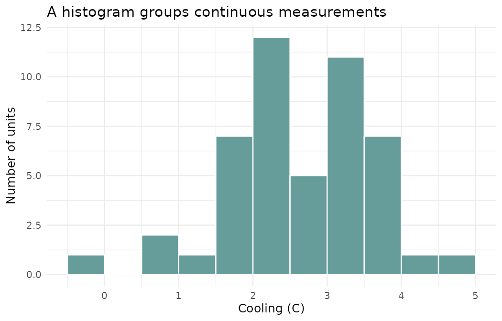
横轴是模拟装置的降温量，纵轴是半度区间中的装置数量。改变箱宽会改变图形细节，但不改变数据。
放大查看 ↗ · 下载图片 ↓geom_histogram(binwidth = 0.5) 按半度的区间计数。把宽度改成 1 或 0.25，数据没有改变，形状的细节却可能不同。箱宽太大可能掩盖结构，太小又可能让随机起伏显得突出。
类别原始记录可用 geom_bar() 计数；已经汇总好高度的表通常用 geom_col()。不要让一个本来已经是均值的列，再被默认计数逻辑当成“有多少行”。
R 实际生成 · 两组的摘要与每个装置
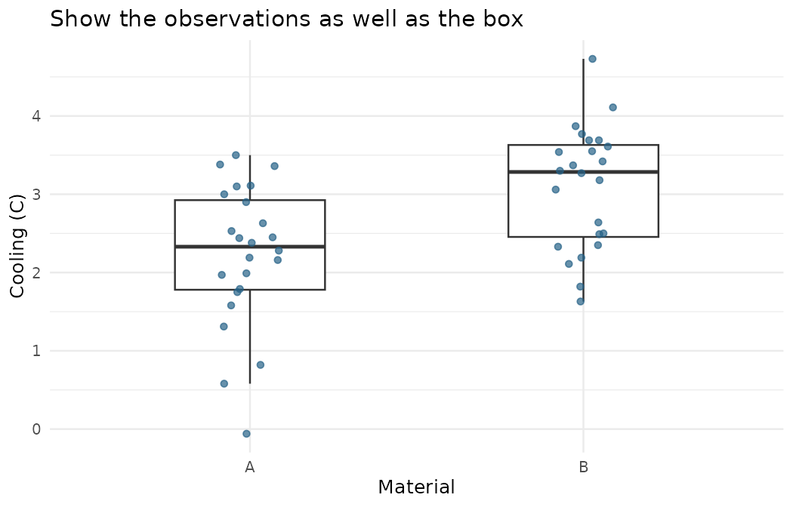
箱体展示分布摘要，每个点是一台独立装置；只作横向抖动，因此点的纵坐标仍是实际降温量。
放大查看 ↗ · 下载图片 ↓箱线图展示中位数、四分位范围及须等摘要。常见规则把超过 1.5 倍四分位距的点标在须外，它们是值得查看的记录，不是自动判定错误的标签。
本例把原始点叠在箱体旁，横向轻微抖动以减少重叠。height = 0 保证纵向温度值没有被移动；固定 seed 让点的位置可复现。箱图隐藏其自身的异常点标记，是为了避免与已显示的全部原始点重复画两遍。
图能帮助看位置、离散程度、样本量和异常记录。两组箱体分开或重叠，不能直接代替一个有明确条件的统计比较。我们先把图读清楚，后面再报告均值差、区间及检验结果。
动手试试
你已经有每个地点的 mean_c，想用柱高表示均值，应优先用 geom_bar() 默认计数还是 geom_col()？
柱高来自已有的数值列。
用 geom_col(aes(x = site, y = mean_c))。geom_bar() 的默认统计是计数，二者处理的数据阶段不同。
下一节继续沿地图向前。也可以先修改本节例子中的一个值，解释输出为什么变化。
检查一下理解
变量类型与统计含义决定图形，不是外观装饰。
第 21 节 · 图形广场
同一张图里的点，应该怎样连线？
正确指定线的分组，使用分面比较地点并说明缺失。
回到一周的重复观察。我们想看每个地点上午、下午随日期变化的温度，因此一条线应属于同一个地点的同一个时段。图中用地点分面，再让 group = period 指定面板内两条线。
# 数据调查小镇 · 第 21 节
# 在 r-lab 项目根目录运行；输出只写入 results。
suppressPackageStartupMessages(library(dplyr))
suppressPackageStartupMessages(library(ggplot2))
x <- read.csv("data/observations.csv", stringsAsFactors = FALSE) |> distinct()
x$date <- as.Date(gsub("/", "-", x$date))
x$period <- factor(x$period, levels = c("morning", "afternoon"))
p <- ggplot(x, aes(date, temperature_c, colour = period, group = period)) + geom_line(na.rm = TRUE) + geom_point(na.rm = TRUE) + facet_wrap(~ site_id, nrow = 1) + scale_colour_manual(values = c("#256187", "#b9553d")) + labs(x = "June 2026", y = "Temperature (C)", colour = "Period", title = "Same scales, separate sites") + theme_minimal(base_size = 12)
dir.create("results", showWarnings = FALSE)
ggsave("results/21-trends.png", plot = p, width = 9, height = 4.5, dpi = 140)
print(c(records = nrow(x), missing_temperature = sum(is.na(x$temperature_c)))) records missing_temperature
42 2R 实际生成 · 同一尺度下的三处地点

每幅面板代表一个地点，两种颜色分别表示上午与下午。图中缺失温度没有被补齐，同一地点的点是重复观察。
放大查看 ↗ · 下载图片 ↓geom_line() 按横轴顺序连接同一组的记录。它让时间趋势容易追踪，却不表示相邻测量之间真的被连续监测。如果横轴只是没有自然顺序的地点名称，连成一条线往往会制造并不存在的过程感。
本例先处理完全重复行和日期格式，再绘图。上午、下午用因子规定图例顺序。先整理、再画图，能让绘图语法保持清楚。
分面把同一画法用于不同子集。facet_wrap(~ site_id) 为每个地点创建一个面板，默认使用相同坐标范围，便于比较真实的高度差。如果采用各自缩放的自由坐标，要明确告知读者，否则视觉上的高低可能失去可比性。
正文有多个图形时，应保持相同地点或时段的配色含义。需要时再加线型、点形或直接标注，让颜色不是唯一的信息通道。
本批数据有两条温度缺失。na.rm = TRUE 避免重复打印绘图警告，但未把缺失值变成观测。应保留缺失数量，并检查缺口在图上的表现；线与点的显示不等于进行了插值。
这幅图是对现有记录的描述。一天的上午和下午、同一地点相邻日期之间都可能有关系，因此后面不会直接把它们当作独立样本去做最简单的两组检验。
动手试试
如果把所有地点都放到一个面板，却只设置 group = period，会发生什么风险？
同一时段会包含多个地点的记录。
线可能把不同地点的点连接在一起，产生不属于任何一个地点的轨迹。应同时考虑地点与时段的分组，或保持地点分面。
下一节继续沿地图向前。也可以先修改本节例子中的一个值，解释输出为什么变化。
检查一下理解
统一比例尺保证面板之间的数值位置可比较。
第 22 节 · 图形广场
别人只拿到图片，还知道你画了什么吗？
补充标题、单位、样本说明和来源；明确保存尺寸与文件格式。
把散点图从脚本区带到报告里，读者就看不到你的对象名和注释了。因此图片需要足够的自我说明：画的是哪批数据，一点代表什么，横纵轴单位是什么，有哪些重要限制。
标题概括问题，副标题补充样本设计，轴标题写明量与单位，图注说明数据来源。不要只把标题写成“最终图 2”，也不要把观察到的关联直接写成“树荫造成降温”的因果结论。
# 数据调查小镇 · 第 22 节
# 在 r-lab 项目根目录运行；输出只写入 results。
suppressPackageStartupMessages(library(ggplot2))
parks <- read.csv("data/independent_sites.csv")
p <- ggplot(parks, aes(canopy_pct, temperature_c)) + geom_point(colour = "#256187", size = 2.5) + labs(title = "Shade and temperature: a simulated survey", subtitle = "30 independent sites; association is not causation", x = "Canopy cover (%)", y = "Temperature (C)", caption = "Original simulated data | Data Town") + theme_minimal(base_size = 13)
dir.create("results", showWarnings = FALSE)
ggsave("results/22-labelled.png", plot = p, width = 7.5, height = 5, units = "in", dpi = 140)
ggsave("results/22-labelled.pdf", plot = p, width = 7.5, height = 5, units = "in")
print(file.exists(c("results/22-labelled.png", "results/22-labelled.pdf")))[1] TRUE TRUE
R 实际生成 · 一张带完整说明的图
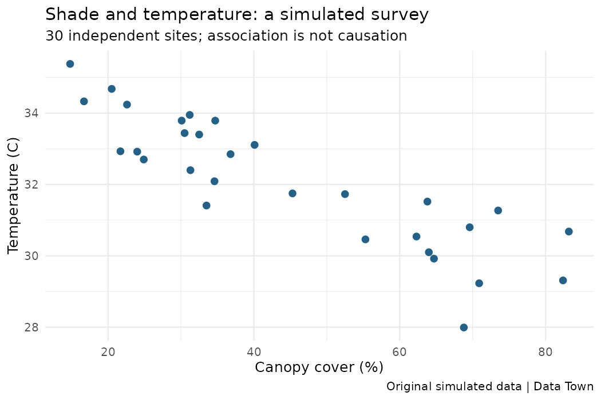
标题、副标题、单位、样本量和模拟来源让图片离开正文后仍有必要的解释；更完整的设计在数据字典中。
放大查看 ↗ · 下载图片 ↓ggsave(..., plot = p) 指定要保存的图对象。依赖“上一次画的图”虽然方便，但脚本一旦加入其他图，可能把错误图形存到熟悉的文件名下。文件名、宽高与单位一起写清楚，更便于复现。
PNG 是位图，像素与分辨率影响放大后的清晰度；PDF 常能保存矢量图形，更适合需要缩放的图表。脚本同时输出两个版本，让你比较用途。提高 dpi 不会修复过密标签或含糊的图形设计。
打开生成文件，而不是只看 RStudio 里的预览。检查轴标题有没有被截断，字号是否可读，图例是否遮挡点，颜色是否容易区分。把图片缩到最终报告里的尺寸，再读一次。
中文图形在不同系统中需要合适字体。本教材的可执行统计图使用英文轴标签及完整中文正文说明，减少字体环境差异。替换为中文标签时，应先确认字体可用并检查导出的文件，不能只凭屏幕上没有报错就认为字都正常。
图片方便交流，代码与数据保证复查。保留相对应的 .R 文件、输入表和运行环境说明。对图形参数进行修改后，重新运行并检查输出，避免图片内容和脚本版本不一致。
从这一节开始，一幅“完成的图”同时包含合适的统计表达、清楚的说明和可找到的生成步骤。
动手试试
从 results 打开 22-labelled.png，遮住正文，确认至少四项信息能从图里读到。
问题、变量单位、样本量、来源或设计限制都可以。
图中应能找到冠层覆盖与温度的关系、百分比和摄氏温度、30 个独立地点、模拟数据来源，以及关联不代表因果的说明。
下一节继续沿地图向前。也可以先修改本节例子中的一个值，解释输出为什么变化。
检查一下理解
明确对象能避免脚本增加图形后保存了错误的上一张图。
第 23 节 · 脚本工作室
每次遇到全缺失，都要重写判断吗？
使用单个逻辑条件，定义有明确输入和输出的小函数。
分组均值有一个特殊情况：某组全是 NA。我们希望明确返回 NA，表示没有有效温度；其他组则对已知温度求均值。这个规则可以写成一个小函数，让每次处理都一样。
# 数据调查小镇 · 第 23 节
# 在 r-lab 项目根目录运行；输出只写入 results。
mean_if_present <- function(x) {
if (all(is.na(x))) {
return(NA_real_)
}
mean(x, na.rm = TRUE)
}
print(mean_if_present(c(26, NA, 28)))
print(mean_if_present(c(NA_real_, NA_real_)))
print(mean_if_present(c(30, 32)))[1] 27 [1] NA [1] 31
条件判断 if (...) 需要一个有效的 TRUE 或 FALSE。is.na(x) 对每个元素判断，可能返回一整列；all(is.na(x)) 把它们合成“是否全部缺失”这一个问题。
不要直接写 if (x > 30) 来处理一长列数。整列筛选用之前学过的逻辑索引或 filter；if 用来决定接下来走哪一段程序。它们都用条件，但工作层次不同。
function(x) 声明输入叫 x，花括号圈定函数体。全部缺失时，return(NA_real_) 提前返回一个数值型缺失；否则最后一个表达式 mean(x, na.rm = TRUE) 的结果成为返回值。
返回值可以被保存、打印或传入下一步。函数里计算了什么，与是否在控制台显示出来是两回事。完整示例用 print() 明确展示结果。
本节分别测试部分缺失、全部缺失、完全有效三个输入。再试一个只有一个有效值的向量，观察是否仍符合你的预期。输入如果是文字，函数也可能不适用；正式流程可以增加类型检查，明确接受什么数据。
函数不是越短越好，也不是凡是两行代码就必须包起来。当一条规则需要重复使用、单独解释或单独检查时，给它一个名字通常很有帮助。名字 mean_if_present 说明行为，比不相关的人名或一个字母更容易读懂。
返回 NA 保留了信息不足的事实。这里没有估计缺失温度，也没有声称“缺失机制可以忽略”。后面的完整分析会同时报告有效数，避免把函数成功运行误当作数据已经充分。
动手试试
mean_if_present(c(NA, 31, NA)) 应返回什么？如果输入全是 NA 呢？
先看 all(is.na(x)) 的真假。
第一种返回 31，因为有一个有效值；全缺失时返回 NA_real_。两种情况都应配合有效数解释信息量。
下一节继续沿地图向前。也可以先修改本节例子中的一个值，解释输出为什么变化。
检查一下理解
if 决定程序分支，需要单个 TRUE 或 FALSE。
第 24 节 · 脚本工作室
四次换算该用循环，还是一次向量运算？
写出 for 循环，使用 seq_along，并比较等价的向量化操作。
我们已经知道摄氏转华氏的公式。先故意逐项计算，观察 循环如何工作：创建一个结果向量；让 i 依次取每个位置；把计算结果写到同一位置。
# 数据调查小镇 · 第 24 节
# 在 r-lab 项目根目录运行；输出只写入 results。
celsius <- c(26, 28, 30)
fahrenheit <- numeric(length(celsius))
for (i in seq_along(celsius)) {
fahrenheit[i] <- celsius[i] * 9 / 5 + 32
}
print(fahrenheit)
print(celsius * 9 / 5 + 32)
print(identical(fahrenheit, celsius * 9 / 5 + 32))
print(seq_along(numeric(0)))[1] 78.8 82.4 86.0 [1] 78.8 82.4 86.0 [1] TRUE integer(0)
numeric(length(celsius)) 提前准备结果空间，for (i in seq_along(celsius)) 遍历有效位置。每轮中的 i 只代表一个位置，方括号找到该位置的温度和保存结果的位置。
向量化表达式 celsius * 9 / 5 + 32 把同样规则应用于整列，更简洁，也容易直接对照换算公式。示例用 identical() 检查本例两种写法的结果。
向量化不是在所有场景里都必须追求的口号。处理一组文件、反复拟合模型或重复模拟时，清楚的循环可能很合适。关键是明确每轮的输入、输出，以及结果如何汇集。
如果向量长度为零，1:length(x) 会成为 1:0，意外得到两个位置 1 和 0。seq_along(x) 则返回空的整数序列，不会错误执行两轮。这个边界例子能说明：看起来很自然的简写，也可能隐含不符合意图的行为。
后面会使用 replicate()，把某段表达式重复执行并收集结果。你可以把它看成针对重复计算的便捷工具，但仍需知道重复了什么、每次是否重新生成样本，以及返回的是向量还是矩阵。
每一轮模拟是一份新的样本，并不等于把同一份观察数据复制很多次。循环能增加计算次数，不能凭空增加真实研究的样本量。
先用三个值测试，再增加规模；先检查第一项和最后一项，再检查整个向量。对可能为空的输入也运行一次，能避免把只在小例子中成立的直觉带进完整流程。
动手试试
x <- numeric(0) 时，1:length(x) 与 seq_along(x) 有何不同？
计算 1:0 试试，注意它并不是空序列。
1:length(x) 得到 1、0；seq_along(x) 得到 integer(0)。遍历现有元素时，后者符合没有元素就不执行的意图。
下一节继续沿地图向前。也可以先修改本节例子中的一个值，解释输出为什么变化。
检查一下理解
计算重复与独立采集数据不同，复制记录不会创造新证据。
第 25 节 · 抽样公园
42 条记录，为什么不一定是 42 个独立样本？
区分总体、样本、观察单位、随机抽样和随机分组。
总体是问题所指向的对象集合，样本是实际观察到的部分。想了解一周内三处地点的记录，与想推断整座城市所有公园的气温，是两个不同目标。再精确的函数，也不会自动把小范围数据变成有代表性的全城样本。
先写下研究对象、时间范围、记录规则和观察单位。一行是一个人、一个地点、一个装置，还是同一对象的一次测量？这些决定应该怎样理解样本量。
图解 · 记录行数与独立单位

左边是三个地点的重复记录，右边是分别观测一次的独立装置。编号数量不能代替对采样设计的判断。
放大查看 ↗ 保存 SVG ↓# 数据调查小镇 · 第 25 节
# 在 r-lab 项目根目录运行；输出只写入 results。
trial <- read.csv("data/shade_trial.csv")
observations <- read.csv("data/observations.csv")
print(c(trial_rows = nrow(trial), independent_units = length(unique(trial$unit_id))))
print(c(observation_rows = nrow(observations), distinct_sites = length(unique(observations$site_id))))
# 同一地点的重复记录不等于同样多的独立地点。 trial_rows independent_units
48 48
observation_rows distinct_sites
43 3一周观察表来自三个地点，反复记录日期和时段。地点内的测量可能相关。它可以帮助描述变化，但简单地把所有行视为独立地点，会夸大信息量。
遮阳材料实验则模拟了 48 个独立装置，随机分成 A、B 两组，每个装置只报告一次降温结果。两组独立均值比较的基本设计，在这里更合适。独立性来自数据产生方式，不能单靠软件看到不同编号就证明。
随机抽样从目标总体中选择谁进入样本，有助于讨论代表性；随机分组把已经进入实验的单位分配到不同条件，有助于减少组间系统差异。一个实验可以随机分组，却只涉及很有限的装置与环境，因此其外推范围仍然受限。
我们的资料是模拟的：用它学习方法及设计假设，而不是据此推荐某种真实材料。代码中的“随机”也要说明是抽样、分配，还是仅为画图轻微抖动的位置。
统计推断需要条件，不能靠记录数量掩盖采样偏差。如果只在最热的一天、最繁忙的地点收集数据，更多相似记录也未必能代表全年全城。你应能在运行检验前，用普通语言说明数据支持哪些对象、哪些问题。
下一节会生成一批又一批新的样本，观察统计量如何波动。那是一个了解不确定性的实验，不是把当前三处地点假装扩充为上千处地点。
动手试试
三个地点各记录 14 次，能否直接称为 42 个独立地点样本？为什么？
一行的单位与地点层级的单位需要区分。
不能。地点只有 3 个，同一地点的重复测量可能相关。可以描述 42 条测量记录，但若要地点级推断，需要考虑采样设计与相关结构。
下一节继续沿地图向前。也可以先修改本节例子中的一个值，解释输出为什么变化。
检查一下理解
随机分组与随机抽样分别处理条件分配和样本来源。
第 26 节 · 抽样公园
总体没变，为什么每次结果还会不同？
通过模拟认识抽样波动、标准误与随机种子的作用。
假设一个模拟总体的温度服从均值 30、标准差 3 的正态分布。这是为了方便理解而设定的模型，并不是声称真实公园温度都服从正态分布。每次从中独立生成 20 个值，计算一次均值。
重复 1000 次，就会得到 1000 个不同的样本均值。总体设定始终相同，样本却不同，因此结果会围绕 30 波动。这些均值的分布叫抽样分布。
图解 · 重新抽样，再算一次
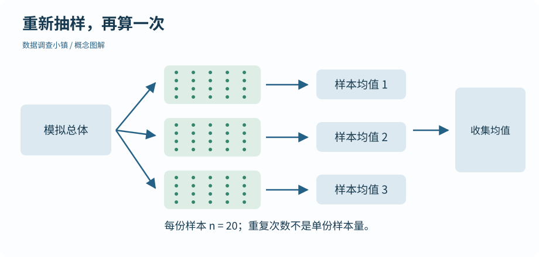
每次拿到新的独立样本，再求一个均值；收集均值才得到抽样分布。这里是流程示意，数值结果见真实 R 图。
放大查看 ↗ 保存 SVG ↓# 数据调查小镇 · 第 26 节
# 在 r-lab 项目根目录运行；输出只写入 results。
set.seed(26)
first <- rnorm(5, mean = 30, sd = 3)
set.seed(26)
second <- rnorm(5, mean = 30, sd = 3)
print(identical(first, second))
# 每一列是一份新的独立样本，而不是把一份观测反复抄写。
set.seed(2601)
means <- replicate(1000, mean(rnorm(20, mean = 30, sd = 3)))
print(round(c(mean_of_means = mean(means), spread_of_means = sd(means), theoretical_se = 3 / sqrt(20)), 3))
dir.create("results", showWarnings = FALSE)
png("results/26-sampling.png", width = 1000, height = 620, res = 120)
hist(means, breaks = 25, col = "#8ebabb", border = "white", main = "1000 samples, 1000 means", xlab = "Sample mean (n = 20)")
abline(v = 30, col = "#b9553d", lwd = 2)
invisible(dev.off())[1] TRUE
mean_of_means spread_of_means theoretical_se
29.995 0.665 0.671R 实际生成 · 1000 次抽样的均值
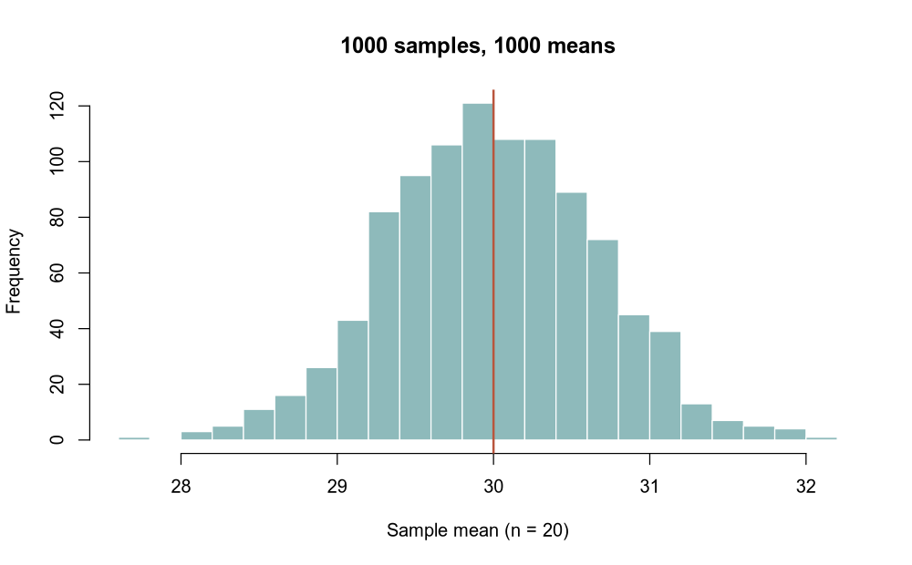
每次从指定正态模型生成 20 个独立值再求均值。红线为总体均值 30，直方图展示的是样本均值，不是个体温度。
放大查看 ↗ · 下载图片 ↓总体标准差 3 描述个别温度的分散；样本均值的标准误描述反复抽样时均值的分散。本模拟中，在独立同分布条件下，均值标准误为 3 / sqrt(20)，比个别值的标准差小。
增加每份样本的大小，通常会让均值更稳定；增加模拟重复次数，则让我们更清楚地观察这种稳定程度。两个“增加”改变的东西不同，不能混为样本量增加。
随机种子决定伪随机数序列的起点。相同方法与环境下，先 set.seed(26) 再生成值，可以复现相同序列。把种子重置后再次生成，本例的两组数应相同。
固定种子不会消除现实中的不确定性，也不会让模拟更接近你希望的结论。不要不断换种子直到得到漂亮结果。报告说明种子与生成方法，才能让人复查演示。
把每份样本大小从 20 改为 80，先预测均值分布会更宽还是更窄，再重跑。理论标准误从 3/sqrt(20) 变为 3/sqrt(80)，约缩小一半。这种关系依赖独立等条件，不适用于任意相关的重复记录。
下一节会把一个均值扩展为区间，用它表达估计的不确定性。
动手试试
每次取 20 个值重复 1000 次，与每次取 80 个值重复 1000 次，哪一个改变了单份样本量？
样本量是每次用于估计的观察数。
后者把单份样本量从 20 增到 80。重复次数仍是 1000；改变重复次数主要影响模拟对抽样分布的刻画精度。
下一节继续沿地图向前。也可以先修改本节例子中的一个值，解释输出为什么变化。
检查一下理解
可复现的计算与现实样本的抽样不确定性是两个层面。
第 27 节 · 抽样公园
95% 置信区间中的 95%，究竟指什么？
用重复抽样理解区间覆盖率；识别均值区间的条件与边界。
单个样本均值告诉我们一个估计值，但没有交代它可能多不稳定。置信区间使用样本信息构造一段范围，把估计和不确定性放在一起。本节继续使用来自正态总体的独立样本，且总体标准差需要从样本中估计。
均值的 t 区间可以写成：样本均值 ± 临界系数 × 样本标准误。代码中 sd(x)/sqrt(length(x)) 估计标准误；qt(0.975, df = n - 1) 给出双侧 95% 区间使用的 t 分布临界值，df 是自由度。
图解 · 真值固定，区间在变
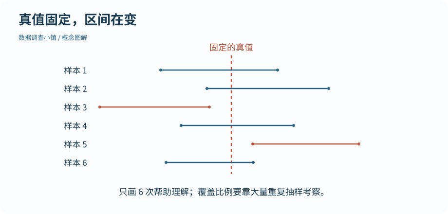
竖线代表固定的总体真值；各横线来自不同样本。示意只画六次，不用于估计 95% 覆盖比例。
放大查看 ↗ 保存 SVG ↓# 数据调查小镇 · 第 27 节
# 在 r-lab 项目根目录运行；输出只写入 results。
# 来自正态总体的独立样本；总体均值 30 是模拟者知道的真值。
set.seed(27)
intervals <- replicate(1000, {
x <- rnorm(20, mean = 30, sd = 3)
margin <- qt(0.975, df = length(x) - 1) * sd(x) / sqrt(length(x))
c(lower = mean(x) - margin, upper = mean(x) + margin)
})
covered <- intervals["lower", ] <= 30 & intervals["upper", ] >= 30
print(round(mean(covered), 3))
print(round(intervals[, 1:3], 2))
dir.create("results", showWarnings = FALSE)
png("results/27-intervals.png", width = 1000, height = 700, res = 120)
plot(NA, xlim = range(intervals[, 1:40]), ylim = c(1, 40), xlab = "Mean temperature (C)", ylab = "Repeated sample", main = "40 intervals from repeated sampling")
segments(intervals[1, 1:40], 1:40, intervals[2, 1:40], 1:40, col = ifelse(covered[1:40], "#256187", "#b9553d"), lwd = 2)
abline(v = 30, lty = 2)
invisible(dev.off())[1] 0.928
[,1] [,2] [,3]
lower 28.38 27.93 28.65
upper 31.57 31.09 31.99R 实际生成 · 重复抽样得到的均值区间
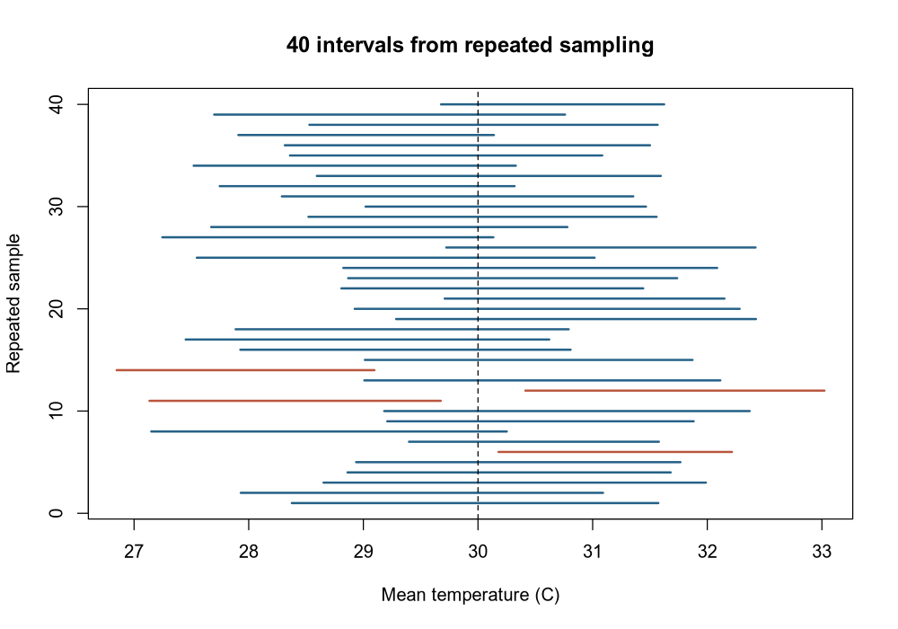
每条横线来自一份不同样本，虚线是模拟总体的已知均值 30；红色区间未覆盖它。这里只展示前 40 次，覆盖率使用全部 1000 次计算。
放大查看 ↗ · 下载图片 ↓模拟者知道总体真均值是 30。每次生成新样本，得到一个新区间，再看它是否盖住 30。反复使用正确条件下的同一种构造方法，长期约 95% 的区间能够覆盖真值；有限次模拟的比例不会被强制等于 0.950。
图中的竖线是真值，横线是前 40 个区间，颜色区分是否覆盖。注意：被漏掉的区间也由同样方法产生，真实研究通常不知道哪一次漏掉了真值。
频率学派的这类区间并不是说“已经算出的区间里，固定的总体均值有 95% 概率在其中”。95% 描述的是反复使用方法的覆盖表现。它也不是“95% 的个体温度落在这里”；总体均值与个体值是不同目标。
样本越大、个体变异越小，区间通常越窄；但很窄的区间也不能修复偏倚采样。方法条件不成立时，名义上的 95% 可能不再兑现。
本示例的正态总体、独立样本都是有意设定的。真实数据需要先检查设计与分布，不能看到 qt() 或一个区间就跳过条件。详细数学推导不是这一节的前提，但你应该能说清区间估计的是谁、使用了多少有效观察、方法依赖什么假设。
动手试试
若 1000 次模拟有部分区间没盖住 30，是否说明程序必定写错了？
95% 是长期覆盖水平，不是每一个区间都正确的承诺。
不一定。正确条件下也预期有一定比例的区间遗漏真值；有限模拟还存在波动。应检查方法与实现，而不是要求覆盖比例精确等于 95%。
下一节继续沿地图向前。也可以先修改本节例子中的一个值，解释输出为什么变化。
检查一下理解
均值区间描述均值估计的不确定性，不是个体数据的覆盖范围。
第 28 节 · 抽样公园
一个小 p 值，到底反对了什么？
说明零假设、双侧极端性和 p 值；区分证据强度与效应大小。
零假设在本例中是“总体均值为 30”。为了直观看清 p 值，我们还明确假定正态模型、总体标准差已知为 3、每份样本有 20 个独立观察。这里的已知标准差是演示设定，下一节真实形式的两组比较不需要你假装知道总体标准差。
现在给定一个演示用的样本均值 31.2，问：如果零假设与这些模型条件成立，得到离 30 至少这么远的均值有多常见？
图解 · 在指定假设下看两侧极端

示意以 30 为中心，均值 31.2 距它 1.2，因此双侧也计算不高于 28.8 的一端。实际概率由本节 R 代码计算。
放大查看 ↗ 保存 SVG ↓# 数据调查小镇 · 第 28 节
# 在 r-lab 项目根目录运行；输出只写入 results。
# 演示假设成立时，样本均值仍会波动。这里特意设定已知总体标准差 3。
set.seed(28)
null_means <- replicate(10000, mean(rnorm(20, mean = 30, sd = 3)))
observed_mean <- 31.2
# 双侧：离 30 至少同样远；这不是“零假设为真的概率”。
simulated_p <- mean(abs(null_means - 30) >= abs(observed_mean - 30))
exact_p <- 2 * pnorm(-abs(observed_mean - 30) / (3 / sqrt(20)))
print(round(c(simulated_p = simulated_p, normal_model_p = exact_p), 4)) simulated_p normal_model_p
0.0746 0.073631.2 与 30 相差 1.2。双侧比较同时把不低于 31.2 和不高于 28.8 的结果视为至少同样极端。代码通过绝对距离计数；pnorm() 用本例已知的正态模型计算相应概率。
模拟估计与模型值可能略有差异，因为模拟只有有限次。pnorm() 是分布函数工具，不代表任何数据都适合这个正态例子。使用公式前，要先把它对应的世界说清楚。
p 值是在零假设及相关模型条件下，统计量至少与观察结果同样极端的概率。它不是“零假设为真的概率”，也不是“这个结果纯属偶然的概率”。小 p 值表示数据与指定模型中的零假设较不相容，但不能单独指出是零假设还是其他条件出了问题。
显著性水平例如 0.05，是预先设定的长期错误率控制规则的一部分，不是观察到 0.049 就突然发现真理、0.051 就毫无信息的开关。
样本很多时，很小的效应也可能有很小的 p 值；样本很少时，值得关注的差异也可能不够精确。报告应同时给出效应大小、区间、样本量和设计。不要反复尝试不同分组、指标或方向，只保留最小的 p 值。
若同时检验许多问题，多重比较会改变误报风险，需要相应设计和方法。首版主线先围绕预先说明的少量问题学习，不用一串星号代替分析。
动手试试
p 大于 0.05，是否证明两组完全相同？应该再看什么？
证据不足与差异为零是不同结论。
不能证明相同。还要看差异估计、置信区间、样本量及研究设计；区间较宽可能仍与有实际意义的差异相容。
下一节继续沿地图向前。也可以先修改本节例子中的一个值，解释输出为什么变化。
检查一下理解
p 值的条件方向不能倒过来解释。
第 29 节 · 证据研究所
差多少，比“有没有星号”更具体吗？
进行独立两组 Welch 比较，报告差值方向、区间与 p 值。
模拟实验把 48 个独立装置随机分到 A、B 两种遮阳材料，每组 24 个。每个装置记录一次开始温度、结束温度及降温量。预先提出的问题是：两组平均降温量之差 B−A 是多少？
这里比较的是每个独立装置的降温量，而不是把开始和结束两次读数当作两份独立装置。开始与结束属于同一个装置；计算变化后，每个装置只贡献一个结果。
# 数据调查小镇 · 第 29 节
# 在 r-lab 项目根目录运行；输出只写入 results。
trial <- read.csv("data/shade_trial.csv")
a <- trial$drop_c[trial$material == "A"]
b <- trial$drop_c[trial$material == "B"]
comparison <- t.test(b, a, alternative = "two.sided", var.equal = FALSE, conf.level = 0.95)
print(c(n_A = length(a), n_B = length(b)))
print(round(c(mean_A = mean(a), mean_B = mean(b), difference_B_minus_A = mean(b) - mean(a)), 3))
print(round(comparison$conf.int, 3))
print(signif(comparison$p.value, 4))
print(comparison$method)n_A n_B
24 24
mean_A mean_B difference_B_minus_A
2.214 3.093 0.878
[1] 0.386 1.370
attr(,"conf.level")
[1] 0.95
[1] 0.0008018
[1] "Welch Two Sample t-test"Welch t 检验用于独立两组的均值比较，允许两组总体方差不同。R 的 t.test() 在 var.equal = FALSE 时使用这一方法。它仍然需要合适的独立性和均值推断条件，不是对任意分布与极端异常值都无条件可靠。
先看第 20 节的分布和原始点，确认测量单位及数据产生方式。不要把先做一个正态性检验、再机械选方法当作万能开关；小样本诊断也有局限。
本例把 B 传为第一个向量，A 作为第二个，结果对应 B−A。正值表示 B 的平均降温量更大，负值则相反。调换输入顺序会改变差值与区间的符号；双侧 p 值不因此改变。
完整结果返回一个带名字的列表。comparison$conf.int 取置信区间，comparison$p.value 取 p 值。第 10 节学过的列表结构，现在正好用得上。
报告中包含两组有效样本量、均值差及单位、95% 置信区间、双侧 p 值，再说明实验设计和方法条件。p 值不应四舍五入为“0”；很小时用合适有效位数或阈值形式表达。
同一对象接受两种条件的配对设计，需要不同的处理思路，不能直接照搬独立两组方法。模拟中的随机分组支持在其设定范围内理解处理比较，但这些数据并不代表真实材料性能，也不能任意推广到现实环境。
动手试试
把 t.test(b, a) 改成 t.test(a, b)，均值差、区间与双侧 p 值如何变化？
比较方向反过来，但离零的双侧证据相同。
均值差取相反数；区间端点相应变成原区间的负值并交换顺序；双侧 p 值不变。报告必须同步更新差值方向。
下一节继续沿地图向前。也可以先修改本节例子中的一个值，解释输出为什么变化。
检查一下理解
允许方差不同不等于放弃独立性和其他推断条件。
第 30 节 · 证据研究所
树荫多的地方较凉，可以马上说是树荫造成的吗？
读取 Pearson 相关系数，结合散点图考虑混杂和异常值。
使用 independent_sites.csv：30 个模拟地点，各观察一次冠层覆盖与温度。先打开第 19 节的散点图，再计算相关。你应该先看到关系大体是否线性、是否由少数点主导，而不是只等函数给一个数字。
# 数据调查小镇 · 第 30 节
# 在 r-lab 项目根目录运行；输出只写入 results。
parks <- read.csv("data/independent_sites.csv")
print(nrow(parks))
print(round(cor(parks$canopy_pct, parks$temperature_c, method = "pearson"), 3))
# 相关系数描述线性关系；不能排除地形、时间等其他解释。[1] 30 [1] -0.872
Pearson 相关系数介于 −1 和 1，描述线性关系的方向和程度。负值意味着一个变量偏高时，另一个倾向偏低。它不带原变量的单位，也不是每增加一单位会改变多少；那个问题将在回归中回答。
接近零只说明线性关系较弱，不排除 U 形等非线性关系。一个极端点也可能显著改变相关系数，所以数字必须与图一起看。
冠层覆盖与温度同时受到地形、地面材质、测量时段等因素影响时，观察相关不能单独证明树荫的因果作用。混杂提醒我们：两个变量一起变化，可能来自其他因素的影响。
本例的数据生成过程为了教学设置了关联。读者知道模拟规则，不意味着现实研究者也知道世界的完整机制。我们仍按横断面观察资料的角色练习谨慎表述。
把摄氏度线性换算为华氏度，不会因为数值范围变大就强化这种线性相关。相关系数的标准化性质与回归斜率的单位性质不同，下一节可以把两者并排比较。
处理缺失时应明确哪些成对记录参与计算。本例两个变量都完整；真实资料不能只为得到一个系数就不加说明地忽略缺失或选择某个子集。
可以说“在这份模拟的地点资料中，冠层覆盖与温度呈负向线性关联”。若要说“增加覆盖必定使温度下降多少”，还需要相应的设计与因果假设，单个相关系数不能提供这些。
动手试试
相关系数接近零，是否可以立即说两个变量毫无关系？接下来做什么？
相关系数在这里衡量线性关系。
不能。先看散点图，检查是否存在曲线、分组结构或异常值；线性相关弱不等于所有形式的关系都不存在。
下一节继续沿地图向前。也可以先修改本节例子中的一个值，解释输出为什么变化。
检查一下理解
它是标准化的线性关联量，和有单位的回归斜率不同。
第 31 节 · 证据研究所
覆盖率增加一个百分点，温度平均改变多少？
拟合一元线性回归，解释斜率、区间、均值预测和 R²。
一元线性回归用一个解释变量描述响应变量的平均变化。本例写成温度的条件均值 = 截距 + 斜率 × 冠层覆盖率。这里覆盖率以 0—100 的百分数记录，因此斜率单位是“每增加 1 个百分点对应多少摄氏度”。
图解 · 斜率带着单位
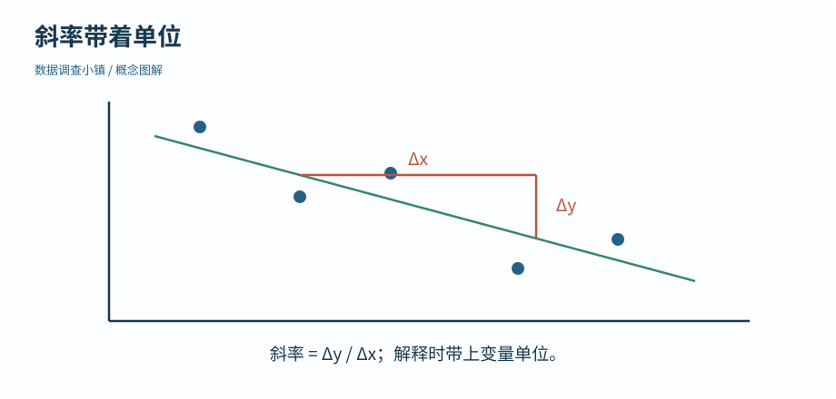
直线的斜率是响应变化量除以解释变量变化量。图是概念示意，不代替实际样本的拟合结果。
放大查看 ↗ 保存 SVG ↓# 数据调查小镇 · 第 31 节
# 在 r-lab 项目根目录运行；输出只写入 results。
parks <- read.csv("data/independent_sites.csv")
model <- lm(temperature_c ~ canopy_pct, data = parks)
print(round(coef(model), 4))
print(round(confint(model), 4))
print(round(predict(model, newdata = data.frame(canopy_pct = 50), interval = "confidence"), 3))
print(round(summary(model)$r.squared, 3))(Intercept) canopy_pct
35.4574 -0.0756
2.5 % 97.5 %
(Intercept) 34.651 36.2638
canopy_pct -0.092 -0.0591
fit lwr upr
1 31.679 31.33 32.029
[1] 0.76lm(temperature_c ~ canopy_pct, data = parks) 中，~ 左边是响应变量，右边是解释变量，data 指明它们来自哪张表。把公式读成“用冠层覆盖解释温度的线性变化”，比只背一个函数模板更清楚。
coef(model) 返回截距和斜率，confint(model) 给出它们的区间。截距是模型在覆盖率为零处的预测均值，但零可能不在现有数据范围内，因此不能直接把截距当成已经观察到的现实场景。
代码在覆盖率 50% 处调用 predict(..., interval = "confidence")，得到的是模型平均温度的置信区间。新的单个地点还包含个体波动，预测区间通常更宽；需要时应明确使用 interval = "prediction"。
不要把平均响应区间当成所有地点都应落入的带状区域。图中的回归线和区间依赖模型条件；下一节会检查这些条件是否与残差表现相容。
R²描述这份数据中响应变异有多少由当前线性拟合解释。它不证明因果，也不自动评价外部预测是否准确。高 R² 可能来自有意义的关系，也可能受数据范围、异常点或设计影响。
本例只讨论一个连续解释变量。复杂模型会引入更多选择与条件，先把斜率方向、单位、数据范围和不确定性说清楚，再扩展更合适。
数据的独立性来自设计；线性形状、变异程度及推断所需的近似条件也要检查。lm() 成功返回对象，只说明数值计算完成，并不自动说明模型适用于你的问题。
动手试试
若斜率是 −0.07，而覆盖率以 0—100 记录，增加 10 个百分点对应的拟合均值改变多少？
先确认横轴是百分点而不是 0—1 的比例。
拟合均值改变 −0.7 °C。这是线性关联模型中的变化，不凭这一结果单独作因果解释。
下一节继续沿地图向前。也可以先修改本节例子中的一个值，解释输出为什么变化。
检查一下理解
平均响应区间与新个体预测区间的目标不同。
第 32 节 · 证据研究所
模型画得出来，就说明模型合适吗？
阅读残差图与 Q–Q 图，识别外推和模型条件的限制。
残差是观察值减去模型拟合值。一个地点比直线预测更热，残差为正；比预测更凉，残差为负。残差不是程序错误，而是用来检查模型是否漏掉规律的信息。
图解 · 观察值减去拟合值

每条竖线连接观察点与同一横坐标的拟合值；在线上方残差为正，下方为负。
放大查看 ↗ 保存 SVG ↓# 数据调查小镇 · 第 32 节
# 在 r-lab 项目根目录运行；输出只写入 results。
parks <- read.csv("data/independent_sites.csv")
model <- lm(temperature_c ~ canopy_pct, data = parks)
print(round(range(parks$canopy_pct), 1))
print(round(c(residual_mean = mean(residuals(model)), residual_sd = sd(residuals(model))), 4))
dir.create("results", showWarnings = FALSE)
png("results/32-diagnostics.png", width = 1200, height = 620, res = 120)
par(mfrow = c(1, 2))
plot(fitted(model), residuals(model), pch = 19, col = "#256187", xlab = "Fitted temperature", ylab = "Residual", main = "Look for curves or changing spread")
abline(h = 0, lty = 2)
qqnorm(residuals(model), pch = 19, col = "#256187", main = "Check the normal approximation")
qqline(residuals(model), col = "#b9553d")
invisible(dev.off())[1] 14.8 83.2
residual_mean residual_sd
0.0000 0.8875R 实际生成 · 检查线性模型的残差

左图查找曲线与变化的离散程度；右图比较残差与正态分布的分位数。图形不能单独证明独立性。
放大查看 ↗ · 下载图片 ↓把拟合值放在横轴，残差放在纵轴。若残差围绕零线随机散开，线性均值与大致恒定变异的假设可能较合理；若出现明显弯曲，线性关系可能不足；若散布逐渐扩大，恒定方差假设可能不合适。
图形是一种诊断线索，不是自动通关的证书。小样本看不出明显模式，也不代表所有条件已被证明。带截距的最小二乘回归中，残差均值接近零是拟合的数学性质，不能把它当成模型正确的独立证据。
Q–Q 图比较残差的分位数与理论正态分位数。明显偏离直线，尤其尾部很强的偏离，提示需要进一步检查。正态条件主要关系到这类小样本区间和检验的精确性；它不是说原始 x、原始 y 必须各自严格正态。
数据独立性不能靠一张 Q–Q 图证实。若记录有时间、地点或个体聚类，需要从设计及相关结构考虑，而不是只看点是否靠近线。
脚本先打印覆盖率的实际范围。在 50% 附近作解释与在远离所有观察的覆盖率处预测，依据强度不同。更不要把此地此时的模拟关系搬到其他气候或季节而不加检查。
看到异常点时，先核对来源和影响，再决定是否修正或采用其他方法，并保留处理记录。只为了让图更直、p 值更小而删点，会改变问题并损害解释。
动手试试
如果残差均值几乎为零，可以据此证明直线模型正确吗？
带截距的最小二乘拟合本来就有这个性质。
不能。这是拟合的数学性质之一；还需要看曲线、散布、异常点、设计独立性及适用范围。
下一节继续沿地图向前。也可以先修改本节例子中的一个值，解释输出为什么变化。
检查一下理解
分布诊断不能替代数据采集设计或文件核验。
第 33 节 · 成果展厅
代码昨天能跑，今天为什么说对象不存在？
读取错误线索，检查输入条件，保存运行环境并干净重跑。
“object not found” 可能说明脚本依赖昨天在控制台创建、但没有写进文件的对象。先重启 R，按脚本从头运行，找到第一处真正失败的位置。最后一行报错不一定是最早发生的问题。
把复杂管道拆成两三段，分别打印行数、列名、类型和几条记录。目标是找到输入在哪一步偏离预期，不是随意加参数直到错误信息消失。
# 数据调查小镇 · 第 33 节
# 在 r-lab 项目根目录运行；输出只写入 results。
records <- read.csv("data/observations.csv", stringsAsFactors = FALSE)
required <- c("record_id", "site_id", "date", "temperature_c")
stopifnot(all(required %in% names(records)))
stopifnot(is.numeric(records$temperature_c))
print(c(rows = nrow(records), missing_temperature = sum(is.na(records$temperature_c))))
dir.create("results", showWarnings = FALSE)
writeLines(capture.output(sessionInfo()), "results/session-info.txt")
print(file.exists("results/session-info.txt")) rows missing_temperature
43 2
[1] TRUE断言让脚本在条件不成立时停止。stopifnot() 检查必需列是否存在、温度是否为数值；完整流程还检查重复编号冲突、非法日期和未知地点键。
错误信息应帮助定位数据问题。例如列名拼成 temprature_c，正确行动是确认原始字段约定，而不是静默创建一个空温度列。错误、警告和普通信息各有用途；不要把所有警告统一屏蔽。
可复现意味着别人能够按说明从输入和步骤重新得到相应结果。保存原始数据、脚本、随机种子及 sessionInfo()。后者记录 R、平台与包版本，有助于解释不同环境的差异。
项目根目录、相对路径和明确的包调用同样重要。包版本锁定的维护方法放在附录；它可以帮助恢复软件依赖，但不会修复数据缺失、错误假设或忘记写进脚本的手动操作。
代码成功运行，说明语法和接口基本可用；数字符合问题，才说明分析逻辑更可信。例如连接后行数翻倍，即使均值函数仍能算出数，也必须回头检查键。
自己做一次“从空白会话开始”的复跑，再对照合理范围和已知小例子。运行环境信息在结果目录中，原始输入仍留在 data。接下来的综合实践会把这些约定组合起来。
动手试试
完整脚本说找不到 summary_table，是否应该直接在控制台手工创建它继续？
先找到应该创建它的上游步骤，看看是否遗漏或失败。
优先修正脚本中的上游创建步骤，然后从干净会话重跑。临时在控制台补对象会继续隐藏依赖，别人仍然无法复现。
下一节继续沿地图向前。也可以先修改本节例子中的一个值，解释输出为什么变化。
检查一下理解
环境信息帮助复现和排错，不能代替数据、代码与方法审核。
第 34 节 · 成果展厅
拿到原始表，怎样留下可检查的整理过程？
运行完整分析，核对原始数、重复数、有效数和汇总结果。
委托包含三个不同问题：这一周观察记录的温度如何分布；模拟随机实验中两种材料平均降温差多少；独立地点资料中覆盖率与温度怎样关联。三类数据的单位和设计不同，因此报告分成三个部分，不把它们拼成一个看似更大的样本。
先检查 data 中的字段手册，再打开完整脚本。脚本分读取、检查、整理、汇总、绘图和报告几个阶段，每个阶段都有可追踪的产物。
图解 · 从输入到可追溯的结果
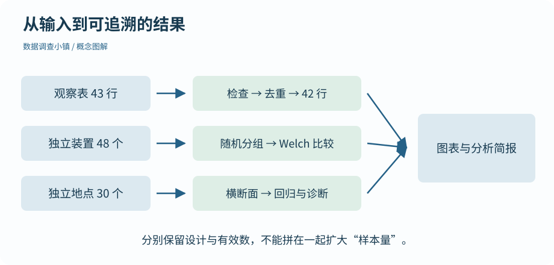
观察表先检查再去掉完全重复，汇总时记录有效数；独立实验和横断面资料沿各自设计进行推断。
放大查看 ↗ 保存 SVG ↓# 数据调查小镇 · 第 34 节
# 在 r-lab 项目根目录运行；输出只写入 results。
source("scripts/analyse.R")
result <- analyse_records("data/observations.csv", "results/first-week")
print(result$audit)
print(as.data.frame(result$summary)) raw duplicate_rows clean missing_temperature
43 1 42 2
site_id site_name n_records n_valid mean_c
1 P01 Riverside 14 13 29.992
2 P02 Meadow 14 13 30.569
3 P03 Grove 14 14 28.736audit 记录原始行数、删除的完全重复行数、整理后行数以及缺失温度数。本批资料应从 43 行变为 42 行，删除的是一条完全相同的重复导入；温度缺失仍保留为缺失，不会被填成零。
地点汇总同时展示 n_records 和 n_valid。如果数字与你预期不同，先查看原始记录与处理规则。不要直接把摘要改成教材中显示的数字，那会失去核对意义。
source("scripts/analyse.R") 先定义 analyse_records()，再用输入文件与输出目录调用它。函数的局部对象不会要求你提前在全局工作区创建同名变量。
它明确拒绝缺列、冲突编号、无法解析的日期和未知地点编号，而不是在这些情况下继续产出一张漂亮图。正文已学过相关操作，完整函数把它们组织在一起。
# 完整分析函数：读取一批观察记录，并明确区分三种资料设计。
# 使用：source("scripts/analyse.R"); analyse_records("data/observations.csv", "results/first-week")
# 只写入调用者指定的结果目录，不修改 data 中的输入。
analyse_records <- function(input, output) {
for (pkg in c("dplyr", "ggplot2")) {
if (!requireNamespace(pkg, quietly = TRUE)) stop("Missing package: ", pkg, "; run setup.R once.")
}
records <- read.csv(input, stringsAsFactors = FALSE, fileEncoding = "UTF-8")
required <- c("record_id", "site_id", "date", "period", "temperature_c", "visitors", "note")
if (!all(required %in% names(records))) stop("Missing required columns")
if (!is.numeric(records$temperature_c)) stop("Temperature must be numeric")
if (any(!is.finite(records$temperature_c) & !is.na(records$temperature_c))) stop("Non-finite temperature")
clean <- dplyr::distinct(records)
if (anyNA(clean$record_id) || any(clean$record_id == "") || anyDuplicated(clean$record_id)) stop("Conflicting or missing record IDs; inspect source records")
clean$date <- as.Date(gsub("/", "-", clean$date), format = "%Y-%m-%d")
if (anyNA(clean$date)) stop("Invalid date; inspect source records")
clean$note <- tolower(trimws(clean$note))
sites <- read.csv("data/sites.csv", stringsAsFactors = FALSE)
if (anyDuplicated(sites$site_id)) stop("Site key is not unique")
if (any(!clean$site_id %in% sites$site_id)) stop("Unknown site ID")
clean <- dplyr::left_join(clean, sites, by = "site_id", relationship = "many-to-one")
mean_or_na <- function(x) if (all(is.na(x))) NA_real_ else mean(x, na.rm = TRUE)
summary <- clean |>
dplyr::group_by(site_id, site_name) |>
dplyr::summarise(n_records = dplyr::n(), n_valid = sum(!is.na(temperature_c)),
mean_c = round(mean_or_na(temperature_c), 3), .groups = "drop")
audit <- c(raw = nrow(records), duplicate_rows = nrow(records) - nrow(clean),
clean = nrow(clean), missing_temperature = sum(is.na(clean$temperature_c)))
trial <- read.csv("data/shade_trial.csv")
parks <- read.csv("data/independent_sites.csv")
if (anyDuplicated(trial$unit_id) || anyDuplicated(parks$site_id)) stop("Inference units must be unique")
if (anyNA(trial$drop_c) || anyNA(parks[, c("canopy_pct", "temperature_c")])) stop("Inference inputs contain missing measurements; review the analysis design")
a <- trial$drop_c[trial$material == "A"]
b <- trial$drop_c[trial$material == "B"]
comparison <- t.test(b, a, var.equal = FALSE, alternative = "two.sided", conf.level = 0.95)
model <- lm(temperature_c ~ canopy_pct, data = parks)
dir.create(output, recursive = TRUE, showWarnings = FALSE)
write.csv(clean, file.path(output, "clean.csv"), row.names = FALSE, na = "", fileEncoding = "UTF-8")
write.csv(summary, file.path(output, "summary.csv"), row.names = FALSE, na = "", fileEncoding = "UTF-8")
p <- ggplot2::ggplot(clean, ggplot2::aes(site_name, temperature_c)) +
ggplot2::geom_boxplot(outlier.shape = NA, width = 0.5, na.rm = TRUE) +
ggplot2::geom_point(position = ggplot2::position_jitter(width = 0.1, height = 0, seed = 34), colour = "#256187", alpha = 0.7, na.rm = TRUE) +
ggplot2::labs(x = "Site", y = "Temperature (C)", title = "Observed records by site", subtitle = "Repeated observations: descriptive comparison only") + ggplot2::theme_minimal(base_size = 13)
ggplot2::ggsave(file.path(output, "observations.png"), plot = p, width = 7.5, height = 4.8, dpi = 140)
p <- ggplot2::ggplot(parks, ggplot2::aes(canopy_pct, temperature_c)) +
ggplot2::geom_point(colour = "#256187") + ggplot2::geom_smooth(method = "lm", formula = y ~ x, colour = "#36866f") +
ggplot2::labs(x = "Canopy cover (%)", y = "Temperature (C)", title = "Independent sites: association, not a causal estimate") + ggplot2::theme_minimal(base_size = 13)
ggplot2::ggsave(file.path(output, "regression.png"), plot = p, width = 7.5, height = 4.8, dpi = 140)
interval <- comparison$conf.int
slope <- coef(model)[["canopy_pct"]]
slope_ci <- confint(model)["canopy_pct", ]
p_text <- format.pval(comparison$p.value, digits = 3, eps = 0.001)
report <- c("# 数据调查小镇 · 分析简报", "", "全部输入均为原创模拟教学数据，不代表真实研究结论。", "",
"## 观察记录", sprintf("输入 %s。原始 %d 行；删除 %d 条完全相同的重复导入后剩 %d 行，其中温度缺失 %d 条。", basename(input), audit[["raw"]], audit[["duplicate_rows"]], audit[["clean"]], audit[["missing_temperature"]]),
"均值只使用有温度的记录；汇总表同时保留记录数与有效数。同一地点重复测量，因此这里只做描述，不把行数当作独立地点数。", "",
"## 随机分组的独立装置实验", sprintf("A、B 各 %d、%d 个独立装置；预先比较降温量 B−A。Welch 双侧比较估计差值 %.3f °C，95%% 置信区间 [%.3f, %.3f] °C，p %s %s。", length(a), length(b), mean(b) - mean(a), interval[1], interval[2], if (grepl("<", p_text, fixed = TRUE)) "" else "=", p_text),
"每个装置随机分组且只贡献一次结果。结论以独立性、连续测量及均值推断的近似条件为前提；效应和区间比一个显著性标签包含更多信息。", "",
"## 地点级横断面资料", sprintf("另有 %d 个地点，各记录一次。冠层覆盖每增加 1 个百分点，模型预测的平均温度改变 %.4f °C；斜率 95%% 区间 [%.4f, %.4f]。", nrow(parks), slope, slope_ci[1], slope_ci[2]),
"这里报告关联，不排除其他变量的影响。解释前检查残差的形状与离散程度；避免超出已有冠层覆盖范围外推。", "",
"## 如何复现", "在 r-lab 项目中运行 scripts/analyse.R 定义函数，再用本批输入路径调用 analyse_records()。包与 R 版本见 session-info.txt。",
"更换观察表只更新观察部分；固定的实验与横断面数据不会因此变成新的研究。")
writeLines(enc2utf8(report), file.path(output, "report.md"), useBytes = TRUE)
writeLines(capture.output(sessionInfo()), file.path(output, "session-info.txt"))
invisible(list(audit = audit, summary = summary, test = comparison, model = model))
}打开 results/first-week/clean.csv 和 summary.csv，确认原始字段及新增地点资料的对应关系。结果写到新目录，输入文件不被覆盖。汇总表的均值描述这批记录，不对三个重复观测地点作简单独立样本检验。
对照分析函数，看每个输出来自哪一段代码。若需要更换清洗规则，先说明理由、修改代码，再重新生成整个结果目录。
动手试试
为什么 43 行原始数据最后有 42 行，但有效温度不是 42 个？
删除重复与温度缺失是两个不同原因。
删除一条完全重复后剩 42 行，其中仍有两条缺失温度，所以用于全表温度计算的已知值是 40 个。缺失所在行仍是有效的记录位置。
下一节继续沿地图向前。也可以先修改本节例子中的一个值，解释输出为什么变化。
检查一下理解
冲突需要回查；不能用自动保留第一行代替判断。
第 35 节 · 成果展厅
别人能从一句结论找到它的依据吗？
核对自动生成的图表、效应、区间和报告措辞。
完整流程已经生成观察分布图、横断面回归图，以及一份 Markdown 简报。报告的组织顺序是问题、数据设计、处理、结果和限制；读者不必跟着每一次控制台操作才能知道发生了什么。
# 数据调查小镇 · 第 35 节
# 在 r-lab 项目根目录运行；输出只写入 results。
source("scripts/analyse.R")
result <- analyse_records("data/observations.csv", "results/first-week")
cat(readLines("results/first-week/report.md", encoding = "UTF-8"), sep = "
")# 数据调查小镇 · 分析简报 全部输入均为原创模拟教学数据，不代表真实研究结论。 ## 观察记录 输入 observations.csv。原始 43 行；删除 1 条完全相同的重复导入后剩 42 行，其中温度缺失 2 条。 均值只使用有温度的记录；汇总表同时保留记录数与有效数。同一地点重复测量，因此这里只做描述，不把行数当作独立地点数。 ## 随机分组的独立装置实验 A、B 各 24、24 个独立装置；预先比较降温量 B−A。Welch 双侧比较估计差值 0.878 °C，95% 置信区间 [0.386, 1.370] °C，p <0.001。 每个装置随机分组且只贡献一次结果。结论以独立性、连续测量及均值推断的近似条件为前提；效应和区间比一个显著性标签包含更多信息。 ## 地点级横断面资料 另有 30 个地点，各记录一次。冠层覆盖每增加 1 个百分点，模型预测的平均温度改变 -0.0756 °C；斜率 95% 区间 [-0.0920, -0.0591]。 这里报告关联，不排除其他变量的影响。解释前检查残差的形状与离散程度；避免超出已有冠层覆盖范围外推。 ## 如何复现 在 r-lab 项目中运行 scripts/analyse.R 定义函数，再用本批输入路径调用 analyse_records()。包与 R 版本见 session-info.txt。 更换观察表只更新观察部分；固定的实验与横断面数据不会因此变成新的研究。
上面的文字由当前输入和脚本实际生成，均值差、置信区间与斜率都来自运算结果。你可以在 results/first-week/report.md 找到同一份简报，而不是只拿到网页中的一段不可追溯文字。
R 实际生成 · 一周记录的地点分布

每点表示一条已知温度记录。地点内反复测量，因此本图用于描述，不能直接视作独立地点组间检验。
放大查看 ↗ · 下载图片 ↓R 实际生成 · 独立地点的拟合关联

30 个地点各观察一次。曲线为一元线性回归拟合，阴影为模型平均响应的区间；不能把阴影当作所有个体的预测范围。
放大查看 ↗ · 下载图片 ↓重复地点记录只做描述，说明日期、缺失与重复处理；随机分组模拟实验报告两组降温差、区间和 p 值，并陈述条件；横断面部分报告关联及斜率，保留混杂和模型诊断的限制。
不要用“证明显著有效”替代效应和区间。结果来自模拟教学数据，因此不能作为现实材料选择或城市治理的研究证据。这个标注应随图片和文字一起被带走。
看到一个均值，能找到用了哪些记录及有效数；看到一个区间，能找到对应的估计目标与方法；看到一个模型斜率，能找到变量单位、数据范围和诊断。你不必把全部代码塞进报告正文，但应该提供对应脚本与数据入口。
自动报告可以减少复制数字时的错误，不能替你判断研究问题和方法是否合适。打开第 32 节的残差图，再检查本报告的回归解释；确认问题、采样设计和输出没有被混用。
本节不要求安装额外的排版系统。Markdown 简报可以直接阅读；后续如果需要动态文档，可以再学习 Quarto。先把输入、代码、结果和解释对应起来，比增加一种排版工具更基础。
动手试试
从报告中选出 B−A 的差值，指出输入文件、观察单位和计算函数。
把一句结果拆成数据、设计与方法。
输入是 shade_trial.csv；每个独立装置贡献一次降温结果；方法是 t.test(b, a, var.equal = FALSE) 的双侧 Welch 比较，报告方向为 B−A。
下一节继续沿地图向前。也可以先修改本节例子中的一个值，解释输出为什么变化。
检查一下理解
自动生成减少抄录错误，不能自动保证统计解释成立。
第 36 节 · 成果展厅
你的方法能离开原来的例子吗？
用新记录复跑，辨认改变与未改变的输入，并整理交付材料。
new_observations.csv 模拟了两天的新观察，仍然使用相同字段约定，包含一条完全重复导入和一项缺失温度。你不用复制一份代码再把所有 43、42 手工改掉，而是给函数传入新文件路径和另一个输出目录。
# 数据调查小镇 · 第 36 节
# 在 r-lab 项目根目录运行；输出只写入 results。
source("scripts/analyse.R")
first <- analyse_records("data/observations.csv", "results/first-week")
next_week <- analyse_records("data/new_observations.csv", "results/next-week")
print(rbind(first_week = first$audit, new_records = next_week$audit))
print(as.data.frame(next_week$summary))
# 新观察表只更新观察部分；实验和横断面资料并没有重新采集。raw duplicate_rows clean missing_temperature first_week 43 1 42 2 new_records 13 1 12 1 site_id site_name n_records n_valid mean_c 1 P01 Riverside 4 3 29.633 2 P02 Meadow 4 4 30.800 3 P03 Grove 4 4 28.650
原批次与新批次的审计摘要并排显示。新原始表有 13 行，删除完全重复后得到 12 行，其中 1 条温度缺失。先自己算清这些数量，再检查地点摘要，确认代码没有偷偷把原来的样本量写死。
本函数更换的是观察记录输入。材料实验仍读取固定的 shade_trial.csv，横断面部分仍读取固定的 independent_sites.csv，因此这些结果没有因为新观察到来就变成新的研究。
如果你的真实问题需要更新实验或地点调查，应该明确增加相应输入参数并核对设计。不要仅凭换了报告标题就声称全部结论已经随新数据验证。
复制新表，故意把一个地点编号改成未知值，或者给同一个记录编号填两个不同温度。运行后应该停止并指出原因。修正输入或处理规则时保留依据，再重新运行。
这个练习不是为了让代码永远“不报错”，而是知道在哪些情况下它应该拒绝继续。能够识别不适用的输入，也是学会一种工具的一部分。
整理项目文件、原始数据及字典、逐步脚本、最终结果、环境信息与说明。解压教材可以离线阅读；真正运行 R 代码需要 R 和相应包，第一次安装通常仍需联网。把阅读与运行的条件写清楚，别人才能顺利开始。
你现在已经从对象与向量走到整理、绘图、区间、检验和回归。后续可以按问题选择配对设计、多重比较、多变量模型或更系统的统计课程；每次都先明确数据如何产生、估计目标是谁、方法的条件是否合适。
找一份规模小、字段清楚、来源可信的非敏感表格。先只完成导入检查、描述统计和一张有单位的图，写下你能支持的结论与还不知道的部分。需要推断时再补设计和方法，不必为了展示所有学过的函数而把它们一次用完。
动手试试
新观察表更新后，材料 B−A 的检验结果没有变化，首先应该检查什么？
看看材料实验究竟读取哪个文件。
检查输入依赖。本函数只更换观察表，材料实验与横断面资料仍是固定文件，因此结果不变符合设计，不能称为新增实验验证。
你可以带走整套项目，再给它换一份属于自己的小数据。先确认记录方式，再选择分析方法。
检查一下理解
可复用代码需要清楚的输入约定；研究设计和解释仍要重新检查。
环境与工作方式
用于数据处理、统计计算与图形的语言和运行环境。
R 执行 mean(c(27, 29))，得到 28。
在第 01 节《R 从哪里来》中使用。
RStudio 是编辑工具，不等同于 R。
回到使用处：第 01 节
环境与工作方式
帮助组织脚本、控制台、对象和图形的开发工具。
在脚本区选中一行，点击 Run 送到 R 控制台。
在第 01 节《R 从哪里来》中使用。
安装 RStudio 通常不能替代安装 R。
回到使用处：第 01 节
环境与工作方式
接收并立即执行代码、显示结果的区域。
在 > 后输入 1 + 1，再回车。
在第 02 节《准备 R 与 RStudio》中使用。
提示符 > 和输出前的 [1] 不是要抄写的代码。
回到使用处：第 02 节
环境与工作方式
按顺序保存计算步骤的文本文件。
lessons/04.R 读取路径、写出文字并检查结果。
在第 01 节《R 从哪里来》中使用。
只保存工作区对象，不等于保存了生成步骤。
回到使用处：第 01 节
环境与工作方式
R 中能够被操作的值及其结构。
temperature 保存一个数，records 保存一张数据框。
在第 03 节《给数字一个名字》中使用。
对象名和用引号括起来的文字不是一回事。
回到使用处：第 03 节
环境与工作方式
把计算结果绑定到一个名字。
x <- x + 1 先计算旧 x 加一，再更新 x。
在第 03 节《给数字一个名字》中使用。
单独运行 x + 1 不会自动改写 x。
回到使用处：第 03 节
环境与工作方式
接收参数、执行规则并返回结果的可调用对象。
mean() 对输入向量计算均值。
在第 03 节《给数字一个名字》中使用。
函数成功返回，并不证明它适合当前研究问题。
回到使用处：第 03 节
环境与工作方式
调用函数时提供的数据或设置。
round(28.456, digits = 1) 中 digits 指定小数位。
在第 03 节《给数字一个名字》中使用。
参数名必须与函数接口匹配，不能只凭中文意思随便起名。
回到使用处：第 03 节
环境与工作方式
把某次工作的数据、脚本和结果组织在同一上下文中。
双击 r-lab.Rproj，从项目根目录运行练习。
在第 04 节《保存一份可以重跑的工作》中使用。
项目不是把所有对象藏进旧工作区的理由。
回到使用处：第 04 节
环境与工作方式
相对文件路径开始寻找的位置。
在 r-lab 根目录，data/sites.csv 指向其 data 子目录。
在第 04 节《保存一份可以重跑的工作》中使用。
同一个相对路径在不同工作目录下可能指向不同文件。
回到使用处：第 04 节
R 对象与结构
按位置排列的一组值；基础原子向量的元素类型一致。
c(27, 29, 28) 是长度为 3 的数值向量。
在第 05 节《一排数字一起计算》中使用。
文字与数值混合时可能统一转换成字符。
回到使用处：第 05 节
R 对象与结构
指定要提取或修改哪些元素的位置或条件。
x[c(1, 4)] 取第一与第四个元素。
在第 06 节《用条件找到想看的记录》中使用。
常规正整数索引从 1 开始；负索引表示排除。
回到使用处：第 06 节
R 对象与结构
表示条件真假，通常为 TRUE、FALSE，也可能缺失。
x > 28 对 x 中每个元素产生判断。
在第 06 节《用条件找到想看的记录》中使用。
带 NA 的条件不能直接假设只有真和假两种结果。
回到使用处：第 06 节
R 对象与结构
表示相应信息未被观察或未知。
c(27, NA, 29) 的第二个温度未知。
在第 07 节《缺了一格，意味着什么》中使用。
NA 不等于 0；忽略 NA 计算也没有补好它。
回到使用处：第 07 节
R 对象与结构
把数据从一种表示类型转为另一种。
as.numeric(c("27", "29")) 得到数值。
在第 07 节《缺了一格，意味着什么》中使用。
无法转换的字符串可能成为 NA，需要检查警告与新缺失。
回到使用处：第 07 节
R 对象与结构
部分向量运算重复使用较短向量的元素。
c(1,2,3,4) 加 c(10,20)，相当于加 10、20、10、20。
在第 07 节《缺了一格，意味着什么》中使用。
长度能整除时没有警告，也未必符合分析意图。
回到使用处：第 07 节
R 对象与结构
由等长列组成的表；不同列可有不同类型。
地点文字列和温度数值列共同组成观察表。
在第 08 节《把记录放进一张表》中使用。
排序时要保持整行对应，不能单独打乱温度再放回去。
矩阵 · 列表 · tibble 数据框
回到使用处：第 08 节
R 对象与结构
保存类别编码及其水平标签的对象。
把 morning、afternoon 设为按早晚排列的水平。
在第 09 节《类别也需要顺序》中使用。
直接转整数会得到内部编码，不一定是标签表示的数值。
回到使用处：第 09 节
R 对象与结构
因子中允许的类别标签与顺序。
levels(period) 返回 morning、afternoon。
在第 09 节《类别也需要顺序》中使用。
类别的排列顺序不等于类别之间有相等的数值距离。
回到使用处：第 09 节
R 对象与结构
带行列维度的同类元素集合。
matrix(1:6, nrow = 3) 默认逐列填充。
在第 10 节《矩阵与列表，各装什么》中使用。
与允许各列不同类型的数据框不同。
数据框 · 列表 · tibble 数据框
回到使用处：第 10 节
R 对象与结构
元素可以具有不同类型与长度的容器。
一个列表同时保存标题、矩阵和检查标志。
在第 10 节《矩阵与列表，各装什么》中使用。
单方括号取得子列表；双方括号取得元素本身。
数据框 · 矩阵 · tibble 数据框
回到使用处：第 10 节
数据与整理
以文本形式保存表格字段的常见格式。
第一行是列名，后续各行用逗号分隔字段。
在第 11 节《读入和带走一份记录》中使用。
扩展名不能保证编码、分隔符和缺失规则符合预期。
回到使用处：第 11 节
数据与整理
用于保存单个 R 对象及其结构的序列化格式。
saveRDS() 写出，readRDS() 读回并赋给自己选定的名字。
在第 11 节《读入和带走一份记录》中使用。
不像普通 CSV 那样便于各类软件直接读取。
回到使用处：第 11 节
数据与整理
数值总和除以参与计算的数量。
26、27、28、39 的均值是 30。
在第 12 节《先认识数字的分布》中使用。
均值可能受极端值影响，不能独自说明整个分布。
回到使用处：第 12 节
数据与整理
把数值排序后位于中间的中心位置。
26、27、28、39 的中位数为 27.5。
在第 12 节《先认识数字的分布》中使用。
它与均值回答中心的方式不同，不必总相等。
回到使用处：第 12 节
数据与整理
描述观测值分散程度的统计量，与原数值同单位。
温度标准差以摄氏度计量。
在第 12 节《先认识数字的分布》中使用。
标准差不是均值的标准误。
回到使用处：第 12 节
数据与整理
总结已获得数据的数量、中心、分散和分布。
按地点列出有效数、中位数与均值。
在第 12 节《先认识数字的分布》中使用。
描述这批记录，不自动证明其他时间或地点的情况。
回到使用处：第 12 节
环境与工作方式
包含函数、数据、文档等可安装功能的集合。
ggplot2 提供图形语法工具。
在第 01 节《R 从哪里来》中使用。
安装与加载是不同动作；当前会话未加载不等于未安装。
回到使用处：第 01 节
数据与整理
磁盘上存放已安装 R 包的目录。
安装后，包文件位于 R 可查找的包库中。
在第 13 节《增加工具，连接步骤》中使用。
不要把其他环境的包库直接混接而忽略兼容问题。
回到使用处：第 13 节
数据与整理
包中函数等对象的命名范围。
dplyr::filter() 明确使用 dplyr 的函数。
在第 13 节《增加工具，连接步骤》中使用。
同名函数可能有不同用途和参数。
回到使用处：第 13 节
数据与整理
把前一步结果传给下一步调用的语法。
先对 x 求均值，再将结果交给 round()。
在第 13 节《增加工具，连接步骤》中使用。
原生管道与 ggplot 的图层加号不是同一种接口。
回到使用处：第 13 节
数据与整理
把记录按一个或多个字段分成子集再计算。
group_by(site_id) 后分别求每处地点均值。
在第 15 节《每个地点各算一次》中使用。
汇总后还可能保留分组，应明确后续行为。
回到使用处：第 15 节
数据与整理
tidyverse 中常用的一种数据框形式。
dplyr 汇总结果通常以紧凑方式打印行列信息。
在第 15 节《每个地点各算一次》中使用。
打印外观变化不会创造新的独立观察。
回到使用处：第 15 节
数据与整理
用于对应多张表中相关记录的字段。
site_id 连接温度记录与地点资料。
在第 16 节《把地点资料接到记录旁边》中使用。
右表键重复可能使左表记录被复制多次。
回到使用处：第 16 节
数据与整理
变量、观察和表结构具有明确对应的组织方式。
长表用地点、时段和温度三列表达测量。
在第 17 节《一张表可以换个形状》中使用。
长表并不总是唯一合适形式；转换不能创造样本信息。
回到使用处：第 17 节
数据与整理
以日为单位表达日历位置的对象。
两个 Date 对象相减可以得到相隔天数。
在第 18 节《整理文字与日期》中使用。
03/04/2026 必须先确认月日约定，不能只看能否解析。
回到使用处：第 18 节
图形表达
依据图形语法组织数据、映射与图层的绘图包。
先设定 x、y，再增加散点图层。
在第 19 节《一幅图怎样搭起来》中使用。
绘图函数成功运行不表示统计解释已经正确。
回到使用处：第 19 节
图形表达
将数据变量映射为位置、颜色、大小等可见属性。
aes(colour = material) 让类别决定颜色。
在第 19 节《一幅图怎样搭起来》中使用。
固定颜色写在 aes 外，不要把 "blue" 当作变量映射使用。
回到使用处：第 19 节
图形表达
把连续数值划分区间，展示各区间的频数或密度。
按半度区间统计降温量。
在第 20 节《给问题选一张合适的图》中使用。
分箱宽度改变外观；不能和类别计数柱状图混为一谈。
回到使用处：第 20 节
图形表达
用柱长或柱高表示类别的数量或其他数值。
地点名对应柱子，柱高对应已有均值。
在第 20 节《给问题选一张合适的图》中使用。
geom_bar() 默认计数，已有高度常用 geom_col()。
回到使用处：第 20 节
图形表达
用中位数、四分位数及须等摘要展示分布。
叠加全部原始点可看见样本量和具体值。
在第 20 节《给问题选一张合适的图》中使用。
须外的点不自动等于错误数据。
回到使用处：第 20 节
图形表达
按分组变量把同一种图形拆成多个面板。
每个地点一幅早晚温度趋势图。
在第 21 节《把时间与地点分开看》中使用。
自由缩放的面板不能只凭视觉高度比较绝对数值。
回到使用处：第 21 节
程序与复现
依据一个逻辑结果选择执行哪段代码。
if (all(is.na(x))) 决定如何处理全缺失。
在第 23 节《把重复规则写成函数》中使用。
if 需要单个非缺失逻辑值，不接受任意整列条件。
回到使用处：第 23 节
程序与复现
函数完成计算后交回调用者的结果。
mean_if_present() 返回数值或数值型 NA。
在第 23 节《把重复规则写成函数》中使用。
返回与打印不同；有返回值未必在 Source 时自动显示。
回到使用处：第 23 节
程序与复现
按照一组值或条件重复执行步骤。
for 循环依次换算每个位置的温度。
在第 24 节《重复步骤，也保持清楚》中使用。
多执行几次计算不等于多采集了独立观察。
回到使用处：第 24 节
程序与复现
让已有操作直接处理整组元素。
celsius * 9 / 5 + 32 对整列进行换算。
在第 24 节《重复步骤，也保持清楚》中使用。
并非所有任务都必须用最短的向量表达式。
回到使用处：第 24 节
统计推断
研究问题希望描述或推断的对象集合。
目标可以是某一周某城市的公园测量情境。
在第 25 节《一行数据算一个样本吗》中使用。
目标必须具体，不能默认样本代表所有地点和时段。
回到使用处：第 25 节
统计推断
从目标对象中实际获得的观察集合。
实验中的 48 个独立装置构成一批样本。
在第 25 节《一行数据算一个样本吗》中使用。
样本量大不能自动消除选择偏差。
回到使用处：第 25 节
统计推断
一项观察所对应的对象或层级。
一次独立装置的降温结果，与同地点的多次测温不同。
在第 25 节《一行数据算一个样本吗》中使用。
数据行数不一定等于独立单位数。
回到使用处：第 25 节
统计推断
依据明确随机机制从目标总体选择对象。
按抽样方案选择要测量的地点。
在第 25 节《一行数据算一个样本吗》中使用。
随机抽样与把样本分进实验组不同。
回到使用处：第 25 节
统计推断
把已进入实验的单位随机分配到条件。
48 个装置随机分到 A、B 材料组。
在第 25 节《一行数据算一个样本吗》中使用。
随机分组本身不保证能向任意外部环境推广。
回到使用处：第 25 节
统计推断
由均值和标准差描述的对称钟形概率模型。
rnorm() 在演示中生成均值 30、标准差 3 的值。
在第 26 节《换一批样本，均值会变吗》中使用。
真实数据并非因为连续就必然正态。
回到使用处：第 26 节
统计推断
重复按同一设计抽样时，某统计量形成的分布。
反复取 20 个值，每次求均值，收集这些均值。
在第 26 节《换一批样本，均值会变吗》中使用。
它不同于单份样本中个体观测值的分布。
回到使用处：第 26 节
统计推断
估计量在重复抽样中波动程度的量度。
独立样本均值的标准误可用样本标准差除以根号 n 估计。
在第 26 节《换一批样本，均值会变吗》中使用。
标准误描述估计量，标准差描述个体观测的分散。
回到使用处：第 26 节
统计推断
为伪随机生成器指定可复现的起点。
重设相同种子后，按同样步骤可生成相同序列。
在第 26 节《换一批样本，均值会变吗》中使用。
不能反复换种子只挑选支持预期的结果。
回到使用处：第 26 节
统计推断
用样本构造的区间估计，其置信水平描述方法的长期覆盖表现。
正确条件下重复计算的 95% 区间长期约有 95% 覆盖真值。
在第 27 节《给估计留出一段范围》中使用。
不是 95% 个体落入的区间，也不是已算区间的后验概率。
回到使用处：第 27 节
统计推断
检验中被明确指定并用于推导比较基准的假设。
演示中规定总体均值为 30。
在第 28 节《先提出假设，再看数据》中使用。
p 较大不意味着零假设已经被证明。
p 值 · 显著性水平 · 双侧比较 · Welch t 检验
回到使用处：第 28 节
统计推断
零假设及相关模型条件下，统计量至少与观测结果同样极端的概率。
双侧演示同时计算均值不低于 31.2 或不高于 28.8 的概率。
在第 28 节《先提出假设，再看数据》中使用。
不是零假设为真的概率，也不直接衡量效应大小。
零假设 · 显著性水平 · 双侧比较 · Welch t 检验
回到使用处：第 28 节
统计推断
把预先定义的两个偏离方向都纳入极端结果。
B−A 过大或过小都可能与零差异不相容。
在第 28 节《先提出假设，再看数据》中使用。
看过结果后再挑单侧方向会改变原来的错误率解释。
零假设 · p 值 · 显著性水平 · Welch t 检验
回到使用处：第 28 节
统计推断
在预定检验规则中用于控制第一类错误的水平。
常见预先设定为 0.05。
在第 28 节《先提出假设，再看数据》中使用。
不是把科学结论分成真与假的魔法界限。
零假设 · p 值 · 双侧比较 · Welch t 检验
回到使用处：第 28 节
统计推断
在合适条件下比较独立两组均值，允许方差不同的方法。
t.test(b, a, var.equal = FALSE) 比较 B−A。
在第 29 节《比较两种材料的降温量》中使用。
允许方差不同不等于任何依赖结构或极端分布都可忽略。
回到使用处：第 29 节
统计推断
Pearson 系数衡量两个变量的线性关联方向与程度。
负系数表示一个变量较大时另一个倾向较小。
在第 30 节《一起变化，不等于造成变化》中使用。
相关接近零不排除曲线关系，相关也不证明因果。
回到使用处：第 30 节
统计推断
其他因素影响比较或关联，使因果解释受到干扰。
地面材质可能同时与树荫分布、温度有关。
在第 30 节《一起变化，不等于造成变化》中使用。
单一相关或简单回归通常不能排除所有其他解释。
回到使用处：第 30 节
统计推断
用一个解释变量的线性函数描述平均响应变化。
温度由截距加斜率乘冠层覆盖率来拟合。
在第 31 节《用一条直线描述关系》中使用。
模型计算成功不代表线性、独立性等条件自动成立。
回到使用处：第 31 节
统计推断
当前线性拟合对样本响应变异的解释比例。
模型输出 R² 用于描述样本内拟合的一方面。
在第 31 节《用一条直线描述关系》中使用。
高 R² 不证明因果，也不是外部预测准确性的保证。
回到使用处：第 31 节
统计推断
观察值减去模型的拟合值。
温度高于直线预测时残差为正。
在第 32 节《直线没讲完的部分》中使用。
带截距的最小二乘残差均值接近零，不等于模型正确。
回到使用处：第 32 节
统计推断
比较两个分布相应分位数的图。
用正态理论分位数对照残差分位数，检查明显偏离。
在第 32 节《直线没讲完的部分》中使用。
图上接近直线不能证明观察相互独立。
回到使用处：第 32 节
程序与复现
要求程序中的指定条件成立，否则停止。
stopifnot() 检查必需列存在。
在第 33 节《让分析离开旧工作区》中使用。
让程序停止常是在保护分析，不应该一律删除检查。
回到使用处：第 33 节
程序与复现
依据公开的输入、步骤和环境说明重新得到相应结果。
空白 R 会话从原始 CSV 生成图、表和报告。
在第 33 节《让分析离开旧工作区》中使用。
固定种子或保存截图都不能单独保证完整复现。
回到使用处：第 33 节